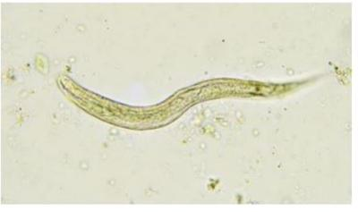
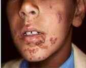
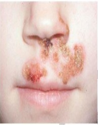
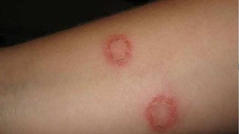
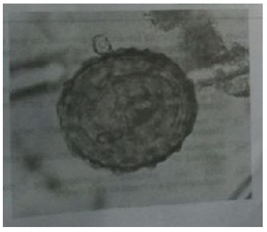

Questão 1 · Tratamento · 4000127786Escolar de 10 anos apresenta quadro de dor abdominal há 30 dias. Sua mãe refere que apresenta episódios de diarreia acompanhando o quadro. Esteve na casa da tia passando férias e nadou na lagoa do sítio. Realizado protoparasitológico que mostrou a presença de cistos de Giardia intestinalis. Qual das alternativas a seguir é mais precisa em relação à giardíase?
A A maioria dos pacientes apresenta início agudo dos sintomas, mais comumente diarreia aquosa e explosiva com cólicas abdominais
B A deficiência de lactase pós-infecção é um achado incomum em pacientes com giardíase
C A água fria é protetora contra a Giárdia, porque os cistos perdem a viabilidade dentro de 3 dias
D O metronidazol é a droga mais comumente prescrita para a giardíase
Questão 2 · Síndrome de Lof f ler · 4000124829As infecções por parasitas intestinais são comuns na faixa etária pediátrica e podem ter quadro clínico variável. A síndrome de Lö er é uma apresentação pulmonar que ocorre devido à passagem do parasita pelo pulmão do hospedeiro como parte do seu ciclo patogênico. Os parasitas que fazem ciclo pulmonar e podem desencadear sintomas respiratórios, como tosse e broncoespasmo no hospedeiro, são os seguintes:
A Taenia Solim e Enterobius vermiculares.
B Isospora Belly e Blastocystis hominis.
C Giardia Lamblia, Entamoeba histolytica e Balantidium coli.
D Ancylostoma duodenale, Necator americanus, Strongyloides stercoralis e Ascarislumbricoides.
E Entamoeba histolytica, Isospora Belly e Ascaris lumbricoides.
Questão 3 · Parasitoses · 4000116366Analise as afirmativas em relação às parasitoses intestinais: I. A Giardia lamblia quadros clínicos assintomáticos ou provoca cólicas e fezes diarreicas sanguinolentas. II. O prolapso retal é uma complicação da infestação por desnutridos. III. O modo de transmissão da sendo o duodeno e o jejuno proximal a localização intestinal mais comum do parasita. IV. A principal característica da infestação pelo V. A infestação maciça pelo helminto é prevenida com medidas simples, como utilizar calçados fechados. Estão corretas as afirmativas:
A I e II
B III e IV
C Somente a afirmativa II
D Somente a afirmativa IV
E I e V
Questão 4 · Quadro clínico · 4000114604Frederico, quatro anos, apresenta febre e tosse há quase um mês. Já foi medicado com antibiótico macrolídeo e inalação com broncodilatador, sem melhora. Exame físico: regular estado geral; FR: 40 irpm, ausculta pulmonar MV bilateral com sibilos difusos; abdome: fígado a 3 cm do rebordo costal direito e baço não palpável. Hemograma: 50.000 leucócitos com 65% de eosinófilos. Hematimetria normal. Radiografia de tórax: infiltrado intersticial bilateral. O diagnóstico mais provável é
A Giardíase.
B Ancilostomíase.
C Toxocaríase.
D Ascaridíase.
Questão 5 · Tratamento · 4000114354Escolar, oito anos, é levado à Unidade Básica de Saúde apresentando, há uma semana, prurido anal diário, na madrugada, que o faz perder o sono. Está apresentando irritabilidade e agitação, reclama, eventualmente de dor abdominal. Seu irmão mais novo teve o mesmo sintoma, melhorando após uso de medicação. Exame físico: sem alterações. Os medicamentos que podem ser utilizados no tratamento desta patologia são
A Levamizol e ivermectina.
B Tiabendazol e mebendazol.
C Pamoato de pirantel e secnidazol.
D Albendazol e pamoato de pirvínio.
Questão 6 · Piomiosite · 4000112798Qual o principal agente etiológico da piomiosite?
A Geralmente são vírus.
B Clostridum perfrigens.
C Streptococos bovis.
D Estafilococo aureus.
Questão 7 · Agente etiológico · Quadro clínico · 4000111396A mãe de uma menina de 4 anos traz a criança ao ambulatório de pediatria com queixa de que ela apresenta, há 3 semanas, corrimento vaginal, que mancha a calcinha. Refere que a criança apresenta prurido anal noturno, disúria e que não percebeu odor na secreção. Sem outras queixas. Ao exame físico, nota-se eritema vulvar. Dentre os citados a seguir, o mais provável agente etiológico desse quadro é:
A papilomavírus humano (HPV).
B corpo estranho.
C molusco contagioso.
D Shigella sonnei.
E Enterobius vermiculares.
Questão 8 · Parasitoses · 4000107796As geo-helmintíases constituem um grupo de doenças parasitárias intestinais relacionadas ao contato com o solo. I- Estas infecções são classificadas como doenças negligenciadas pela Organização Mundial da Saúde (OMS). II- Acometem populações vulneráveis que residem, principalmente, em áreas com de ciência em relação ao saneamento básico e abastecimento de água. III- O grupo de risco mais importante para esta intervenção são as crianças em idade pré-escolar.
A Apenas as afirmativas I e II estão corretas.
B Apenas a afirmativa I está correta.
C Apenas a afirmativa II está correta.
D Apenas as afirmativas II e III estão corretas.
Questão 9 · Tratamento · 4000106201As infestações intestinais por Entamoeba histolytica devem ser tratadas
A somente nos casos sintomáticos.
B apenas se houver invasão tecidual.
C em gestantes, apenas no terceiro trimestre.
D somente em pacientes imunodeprimidos.
E sempre.
Questão 10 · Tratamento · Pediatria · 4000100615Pré-escolar, 03 anos, cuja família provém de um assentamento de trabalhadores sem teto, há 07 dias iniciou quadro de febre, que durou 04 dias, tosse com expectoração hialina e diarreia, com fezes líquidas de cor amarelo-esverdeada, odor pútrido, 04 vezes ao dia, sem muco ou sangue. Apresenta-se com queda do estado geral e recusa alimentar. Ao exame: regular estado geral, acianótico, anictérico, afebril, hidratado, hipocorado ( 1+/ 4+), ausculta cardíaca sem alterações, ausculta pulmonar com roncos e sibilos difusos. Abdome normotenso, globoso, hipertimpânico, indolor, fígado palpável a 03 cm do RCD, parenquimatoso. Exames laboratoriais: Hb 9,0g/dl; GB 12.000 (25% de eosinófilos), radiografia de tórax com infiltrado perihilar e hilar difuso. Neste sentido, qual o provável agente responsável pela associação deste quadro intestinal com manifestação pulmonar e a opção terapêutica?
A Trichuris trichiura, albendazol.
B Enterobius vermiculares, pamoato de pirantel.
C Strongyloides stercoralis, tiabendazol.
D Entamoeba hystolitica, metronidazol.
Questão 11 · Tratamento · 4000089008Criança de 1 ano e 10 meses apresenta desconforto abdominal e prurido anal há cerca de duas semanas, além de dois episódios de diarreia sem muco ou sangue nesse período. Seu exame físico não apresentou quaisquer alterações. Considerando a principal hipótese diagnóstica, é correto afirmar que:
A o pamoato de pirvínio é um tratamento específico para esse parasita e deve ser usado em dose única, com repetição em 14 dias
B o tratamento dessa paciente pode ser feito com albendazol em dose única, sem necessidade de repetição
C a presença de exame parasitológico de fezes negativo exclui a possibilidade de infecção por este parasita
D prolapso retal é uma complicação frequente nas infecções por esse parasita
Questão 12 · Tratamento · Tratamento · Tratamento · 4000082549Criança, 6 anos, comparece à consulta na unidade de saúde com queixa de desconforto abdominal, anorexia, astenia e alteração do hábito intestinal. Traz hemograma que, dentre os resultados, evidencia anemia moderada e eosino lia. Diante da suspeita das principais parasitoses intestinas causadoras de anemia em criança, como a ancilostomíase, tricuríase e amebíase, o antiparasitário de escolha é o
A Albendazol dose única.
B Metronidazol por 5 dias.
C Nitazoxanida por 3 dias.
D Ivermectina dose única.
Questão 13 · Cirurgia · Agentes etiológicos · 4000080564A ocorrência das parasitoses intestinais está diretamente relacionada às condições de higiene, saneamento básico, educação e tipo de moradia da população. Os danos que os enteroparasitas podem causar a seus portadores incluem, entre outros agravos, obstrução intestinal, desnutrição, anemia por de ciência de ferro, diarreia, má-absorção e pneumonite a depender do parasita envolvido. De acordo com a etiopatogenia, a opção em que todos os parasitas apresentam ciclo pulmonar é:
A Enterobius vermiculares, Trichocephalus trichiurus e Ascaris lumbricoides.
B Ascaris lumbricoides, Ancylostoma duodenale e Strongyloides stercoralis.
C Entamoeba histolytica, Strongyloides stercoralis e Giardia lamblia.
D Ascaris lumbricoides, Enterobius vermiculares e Ancylostoma duodenale.
Questão 14 · Quadro clínico · 4000076855Mãe vem ao posto de saúde com criança de 04 anos com história de dor abdominal frequente, diarreia intercalada com período de trânsito intestinal normal a mais ou menos 30 dias. O aspecto das fezes diarreica é líquida, espumosa e algumas vezes com restos alimentares. Este quadro é sugestivo de:
A Amebíase
B Giardíase
C Ancilostomíase
D Teníase
E Ascaridíase
Questão 15 · Tratamento · 4000074286Dois irmãos, um com oito anos e o outro com seis anos de idade são levados à UBS (Unidade Básica de Saúde) com a queixa de que há uma semana, estão apresentando prurido anal no período da noite, levando-os a perder o sono. Ambos apresentam exame físico sem alterações. Os medicamentos que podem ser utilizados no tratamento desta patologia são:
A Albendazol e pamoato de pirvínio.
B Levamizol e ivermectina.
C Tiabendazol e mebendazol.
D Pamoato de pirantel e secnidazol.
Questão 16 · Tratamento · Quadro clínico · 4000074050Pediatra é acordado na madrugada por mãe de paciente que pede orientação pois seu lho de 6 anos apresenta há 2 dias prurido anal durante a madrugada. A história já ocorreu com o irmão mais velho. Quais medicamentos abaixo podem ser utilizados para tratamento da patologia?
A Albendazol e pamoato de pirvínio.
B Levamizol e ivermectina.
C Pamoato de pirantel e secnidazol.
D Tiabendazol e mebendazo.
Questão 17 · Quadro clínico · Agente etiológico · 4000054168As parasitoses intestinais são doenças transmitidas por parasitas, que se utilizam do homem como hospedeiro em algum momento do seu ciclo vital. Dentre elas, quais podem ser transmitidas por alimentos vegetais contaminados e água contaminada?
A Ascaridíase e Amebíase
B Giardíase e Ancilostomíase
C Teníase e Cisticercose
D Enterobíase e Ascaridíase
E Estrongiloidíase e Amebíase
Questão 18 · Quadro clínico · Agentes etiológicos · 4000048205Menino de 10 anos de idade é levado a Unidade Básica de Saúde por estar eliminando vermes cilíndricos e longos nas fezes, associado a dor abdominal difusa, tosse seca e dispneia leve iniciadas há dois dias. Ao exame, sibilos expiratórios em hemitórax direito. Traz hemograma solicitado em consulta anterior com eosino lia moderada (9% de eosinó los). Mãe nega sibilância anterior. Assinale abaixo a alternativa que contém o (s) diagnóstico (s) mais provável (is) e seu (s) respectivo (s) tratamento (s):
A Ascaridíase e asma brônquica/ mebendazol e fenoterol inalatório
B Enterobíase e asma brônquica/ pamoato de pirvinio e fenoterol inalatório
C Criptosporídeo e pneumonia atípica/ Nitazoxamida e azitromicina
D Ascaridíase e Sindrome de Löeffler/ albendazol
E Tricuríase e Sindrome de Löeffler/ Mebendazol
Questão 19 · Tratamento · 4000030626O pamoato de pirantel é uma droga utilizada no tratamento de nematoides, enquanto o pamoato de pirvínio é específico para tratamento de:
A ascaridíase.
B ancilostomose.
C oxiuríase.
D pediculose.
Questão 20 · Parasitoses · 4000030620No tratamento das parasitoses intestinais, a droga de escolha e a sua respectiva indicação são:
A Tiabendazol para giardíase.
B Albendazol para amebíase.
C Metronidazol para teníase.
D Oxamniquina para esquistossomose.
Questão 21 · Parasitoses · 4000030613No Brasil, as parasitoses intestinais ainda são um grave problema de saúde pública, pois existem muitos tipos. Nas parasitoses intestinais,
A a penetração no hospedeiro do Ascaris lumbricoides ocorre através da pele.
B a forma infectante do Schistosoma mansoni é a cercária.
C a Taenia saginata se localiza nas veias do sistema porta do hospedeiro.
D a forma infectante do Ancylostoma duodenale é o ovo.
Questão 22 · Inf ectologia · 4000030607Qual é a infecção mais comum no mundo?
A Amebíase.
B Ascaridíase.
C Cárie.
D Sífilis.
Questão 23 · Agente etiológico · 4000018501Dentre os abaixo, não é protozoário:
A Strongyloides stercoralis.
B Cyclospora cayetanensis.
C Isospora belli.
D Entamoeba histolytica.
E Giardia lamblia.
Questão 24 · Agente etiológico · Quadro clínico · 4000007152Escolar de 5 anos, apresenta episódios de doença diarreica aguda, com fezes volumosas, por vezes com alimentos mal digeridos. A mãe refere hiporexia, e distensão abdominal após alimentação, às vezes com náuseas, vômitos. No gráfico de crescimento, observamos desaceleração do ganho ponderal. A parasitose intestinal que frequentemente associa-se a esse quadro é:
A Giardiase
B Ascaridiase
C Teniase
D Amebiase
Questão 25 · Quadro clínico · 4000007084Um pro ssional de saúde está trabalhando numa unidade básica de saúde, como médico pediatra do Programa Saúde da Família. O agente comunitário de saúde solicita que ele faça uma palestra sobre parasitose intestinal numa escola da comunidade, onde há vários casos de Ancilostomíase. Pede que fale sobre suas complicações para sensibilizar a adesão ao tratamento da parasitose. Durante a palestra deve-se ressaltar que uma complicação importante deste parasita é:
A Abcesso hepático
B Pancreatite aguda
C Colecistite crônica
D Anemia e desnutrição
Questão 26 · Agente etiológico · Tratamento · Quadro clínico · 4000007054Menino de 4 anos, proveniente de uma comunidade rural, há 7 dias iniciou quadro de febre, que durou 4 dias, tosse com expectoração hialina e diarreia, com fezes líquidas de cor amarelo-esverdeada, odor fétido, 5 vezes ao dia, sem muco ou sangue. Apresenta-se com adinamia e recusa alimentar. Ao exame: regular estado geral, acianótico, anictérico, afebril, hidratado, hipocorado (1+/4+), ausculta cardíaca sem alterações, ausculta pulmonar com roncos e sibilos difusos. Abdome normotenso, globoso, hipertimpânico, indolor, fígado palpável a 3 cm do RCD, parenquimatoso. Exames laboratoriais: hemograma com Hb: 8,5 g/dl; Leucócitos: 12.000 (25% de eosinó lo), RX tórax com in ltrado peri-hilar e hilar difuso. Qual o provável agente responsável pela associação deste quadro intestinal com manifestação pulmonar e a opção terapêutica?
A Strongyloides stercolaris, tiabendazol.
B Enterobius vermicularis, pamoato de pirantel.
C Trichuris trichiura, albendazol.
D Entamoeba hystolitica, metronidazol.
Questão 27 · Diarreia Aguda Inf ecciosa · Parasitoses · 4000006240Jovem de 18 anos mora em área de assentamento, na beira de um rio poluído, onde costumam nadar em dias quentes e retiram água para lavar os utensílios domésticos e roupas. Não há saneamento básico. Trabalha na agricultura familiar, comparece à consulta queixando-se de hábito intestinal variado oscilando entre períodos de constipação, hábito normal e diarreia, dor abdominal tipo cólica, anorexia e astenia. Entre as alternativas a seguir, escolha a que possui relação mais estreita com o caso clínico apresentado.
A Deve-se solicitar exames de fezes, para se confirmar a parasitose intestinal e o parasita, com vistas a terapia a ser utilizada.
B Deve-se confirmar o sucesso terapêutico com exame parasitológico de fezes, considerado padrão ouro para diagnóstico de parasitoses intestinais.
C A exposição crônica as condições precárias de higiene, é fator protetor para contaminação por parasitas, uma vez que estimula o desenvolvimento da sua imunidade.
D O tratamento periódico de comunidades vulneráveis com antiparasitários, associado a hábitos adequados de higiene, diminui a prevalência de parasitoses intestinais.
Questão 28 · Ancilostomíase · 4000123085Mãe traz seu lho, um pré-escolar de 2 anos, para atendimento de rotina em unidade básica de saúde. A criança está apresentando quadros frequentes de tosse há cerca de dois meses e refere episódios recorrentes de dor abdominal. Ela fez recentemente um hemograma, que mostra hemoglobina de 9,2, hematócrito de 28% e presença de 8% de e osinó los. Com base no quadro clínico, qual é o diagnóstico mais provável?
A Teníase
B Giardíase
C Tricuríase
D Ancilostomíase
E Amebíase
Questão 29 · Quadro clínico · 4000116796Um pro ssional está trabalhando em uma unidade básica de saúde como médico pediatra do PSF. O agente comunitário de saúde solicita que ele faça uma palestra sobre verminose numa escola da comunidade, onde há vários casos de ancilostomíase. Pede que o maior foco seja dado às complicações, para sensibilizar a adesão ao tratamento. Durante a palestra deve-se ressaltar que uma complicação importante dessa parasita é:
A Colecistite aguda.
B Pancreatite aguda.
C Obstrução intestinal.
D Anemia e Hipoproteinemia.
Questão 30 · Def inição · 4000100773Você participando do Projeto Rondon atende menino de 4 anos de idade com queixa de tosse há 1 semana. Sua mãe refere que acompanhando a tosse apresenta cansaço e chiadeira no peito e febres esporádicas neste período. No interrogatório complementar refere dor abdominal recorrente e episódios de diarreia intermitente. Nos antecedentes familiares os pais têm bronquite. Ao exame físico: Reg, descorado, acianótico, anictérico, afebril, taquipneico e taquicárdico. BRNF com SS +/4+, protosistólico sem irradiação; Murmúrio vesicular presente e simétrico com roncos e sibilos difusos; Abdome globoso, timpânico, indolor, com fígado palpável 1 cm do rebordo; O hemograma mostrou anemia homocrômica e microcítica e leucocitose de 15000, com 18 % de eosinófilo; O RX de tórax mostrou infiltrado difuso bilateral. Considerando o enunciado acima, assinale a alternativa correta:
A Esta criança apresenta Asma brônquica e deve -se iniciar salbutamol inalatório e corticoide oral
B Trata-se de Síndrome de Loeffler e deve ser prescrito albendazol durante 3 dias
C Trata-se de Doença Celíaca e deve se instituir uma dieta isenta de glúten
D Trata se de leucemia pela presença de febre e resultado do hemograma e indica se mielograma
Questão 31 · Tratamento · Tratamento · 4000097894Menina, 4a, retorna para ver resultado de exames de fezes que colheu há 10 dias durante um quadro diarreico. Protoparasitológico: trofozoítos de Giardia lamblia e Entamoeba histolytica. O TRATAMENTO É PRESCREVER:
A Teclozana.
B Tiabendazol.
C Praziquantel.
D Metronidazol.
Questão 32 · Tratamento · Agente etiológico · Tratamento · 4000097816A precária condição do saneamento básico em algumas localidades do Brasil, faz com que o país tenha diversos casos de doenças intestinais provocadas por bactérias, protozoários e vermes. CONSIDERANDO QUE CADA UM DOS AGENTES TEM SUAS PRÓPRIAS CARACTERÍSTICAS, ASSINALE A ALTERNATIVA CORRETA:
A O Ascaris lumbricoides é o helminto mais frequentemente encontrado e localiza-se preferencialmente no canal pancreático, vias biliares e apêndice.
B O Trichuris trichiura localiza-se preferencialmente no ceco e cólon ascendente e pode ser tratado com mebendazol.
C Gestantes com presença de ovos de Schistosoma mansoni nas fezes, devem ser tratadas durante a gestação.
D Crianças com protoparasitológicos com presença de Entamoeba coli ou Endolimax nana ou Iodamoeba butschlii devem ser tratadas com metronidazol.
Questão 33 · Quadro clínico · 4000091327Paciente 66 anos, transplantado hepático de longa data, em uso de tacrolimus e micofenolato, refere quadro de astenia intensa durante suas caminhadas matinais. O quadro se intensi cou ao longo de uma semana, apresentando febre de 38,8 graus, que fez o paciente comparecer ao serviço de emergência. Ao exame: acordado, orientado, hipocorado (3+/4+), anictérico, taquipneico. PA = 90 x 60 mmHg, FC = 112 bpm, SpO2 = 90%. Ausculta respiratória com discretos estertores. Ritmo cardíaco regular, com sopro pancardíaco. Realizada TC de tórax que identi cou in ltrado alveolar difuso. Iniciado antibiótico, hidratação venosa. Durante procedimento de intubação orotraqueal houve saída de quantidade maciça de sangue. Evoluiu com surgimento de grande quantidade de púrpuras principalmente em tronco e abdome. Nas hemoculturas coletadas, surgimento de bacilos gram-negativos. A técnica do laboratório solicita a presença do plantonista, pois identi ca um achado incomum no lavado broncoalveolar coletado ( figura abaixo). Diante do quadro, assinale a principal hipótese diagnóstica:

A Toxoplasmose aguda.
B Hiperinfecção por estrongiloide.
C Leishmaniose visceral.
D Aspergilose broncopulmonar.
E Histoplasmose.
Revisar: possível letra faltando em enunciado
Questão 34 · Ascaridíase · Ancilostomíase · Enterobíase · 4000082459As indicações e limitações das drogas antiparasitárias devem ser bem conhecida pelos médicos. O uso de Albendazol, na dose de 400 mg (miligramas), em dose única, está indicado para o tratamento de:
A Ascaridíase, Enterobíase, Estrongiloidíase, Giardíase.
B Ascaridíase, Giardíase, Teníase.
C Ascaridíase, Enterobíase, Ancilostomíase.
D Ascaridíase, Estrongiloidíase, Ancilostomíase, Giardíase.
Questão 35 · Tricuríase · 4000082311As parasitoses intestinais são comumente encontradas na infância e devem ter o manejo adequado devido a sua alta prevalência. Assinale a afirmativa correta:
A Diarreia crônica com tenesmo e prolapso retal pode estar presente em infestações de tricuríase.
B Giardíase é uma causa de diarreia na criança, a primeira escolha de tratamento é mebendazol por 03 dias.
C Estrongiloidíase, ascaridíase, enterobíase e ancilostomíase fazem Síndrome de Löeffler e podem ocasionar além de sintomas gastrointestinais, tosse crônica e outros sintomas respiratórios além de infiltrado migratório na radiografia de tórax.
D A ascaridíase é a principal causa de diarreia crônica e emagrecimento em crianças, devido a esteatorréia causada pelo “atapetamento” das vilosidades intestinais.
Questão 36 · Síndrome de Lof f ler · 4000079111As parasitoses intestinais são muito frequentes na infância e são consideradas problemas de saúde pública, principalmente nas áreas periféricas das cidades dos países em desenvolvimento, onde ocorrem com grande frequência. Alguns parasitas geram uma resposta inflamatória migratória no pulmão, em razão de seu ciclo cardiopulmonar. São parasitas capazes de gerar a síndrome de Loeffler:
A Ascaris lumbricoides e Strongyloides stercoralis.
B Taenia solium e Trichocephalus trichiurus.
C Necator americanus e Enterobius vermiculares.
D Giardia lamblia e Entamoeba histolytica.
Questão 37 · Síndrome de Lof f ler · Agente etiológico · 4000078013Entre as parasitoses, a que possui ciclo pulmonar é a:
A Teníase.
B Tricuríase.
C Amebíase.
D Ascaridíase.
Questão 38 · Síndrome de Lof f ler · 4000068897Pré-escolar de cinco anos é atendido com história de pneumonia diagnosticada há um mês, sem melhora radiológica, apesar do uso de amoxicilina por dez dias, cefalosporina por sete dias e azitromicina por cinco dias. A primeira radiogra a apresentava in ltrado pulmonar de opacidade homogênea, em lobo superior direito; segunda, com intervalo de uma semana, in ltrado pulmonar com densidade heterogênea em língula e terceira, com intervalo de oito dias, in ltrado pulmonar de opacidade homogênea em lobo inferior esquerdo. Baseado no relato acima, a principal hipótese diagnóstica é
A Síndrome de loeffler.
B Tuberculose pulmonar.
C Pneumonia por Clamydia pneumoniae.
D Pneumonia lipoídica.
Questão 39 · Quadro clínico · 4000056500Menino de quatro anos apresenta febre e tosse há um mês. Já foi emdicado com antimicrobiano e broncodilatador sem melhora. Exame físico: regular estado geral; FR: 40 irpm, MV bilateral com sibilos difusos; abdome: hepatomegalia moderada. Hemograma: Leucocitose com 65% de eosinó los. Hematimetria normal. Radiogra a de tórax: in ltrado intersticial bilateral. O diagnóstico mais provável é:
A Giardíase.
B Toxocaríase.
C Aspergilose.
D Teníase.
E Tuberculose.
Questão 40 · Quadro clínico · 4000051911As parasitoses intestinais constituem um importante problema de saúde pública. Em relação ao parasita que, em infestações maciças, apresenta como uma das manifestações clínicas o prolapso retal, assinale a correta:
A Ascaris lumbricoids;
B Balantidium coli;
C Tricchuris trichiura;
D Taenia solium;
E Giardia lamblia.
Questão 41 · Tratamento · 4000049283Em relação ao tratamento das parasitoses intestinais na infância, os medicamentos praziquantel e niclosamida são indicados para a parasitose:
A Teníase.
B Ancilostomíase.
C Tricuríase.
D Enterobíase.
E Giardíase.
Questão 42 · Parasitoses · 4000046125Com relação aos sintomas clínicos característicos de cada Parasitose Intestinal, enumere a segunda coluna de acordo com a primeira: (1) Ascaridíase; (2) Ancilostomíase; (3) Tricuríase; (4) Estrongiloidíase; (5) Giardíase. ( ) Esteatorréia; ( ) Prolapso Retal; ( ) Anemia Ferropriva; ( ) Dermatite Larvária; ( ) Suboclusão Intestinal.
A 2 / 3 / 4 / 5 / 1.
B 4 / 5 / 3 / 1 / 2.
C 5 / 2 / 3 / 4 / 1.
D 5 / 3 / 2 / 4 / 1.
E 5 / 3 / 4 / 2 / 1.
Questão 43 · Agente etiológico · Quadro clínico · 4000043747Criança de 6 anos, com história de diarreia aquosa, com odor fétido, associada a distensão abdominal e flatulência. Também apresenta perda ponderal progressiva. A parasitose intestinal mais associada a este quadro é:
A Necatoríase
B Amebíase
C Giardíase
D Teníase
E Ascaridíase
Questão 44 · Parasitoses · 4000040208No Brasil uma parasitose intestinal deve sempre ser incluída no diagnóstico diferencial de problemas do desenvolvimento infantil, desnutrição, doenças diarreicas agudas, doenças inflamatórias intestinais e doença celíaca. Qual parasita é responsável por esta parasitose intestinal?
A Ancylostoma duodenale
B Ascaris lumbricoides
C Giardia lamblia
D Entamoeba histolytica
Questão 45 · Tratamento · 4000039610Criança de 1 ano, sexo feminino, é levada a um pronto atendimento por apresentar quadro de tosse seca, coriza hialina e chieira no peito há 7 dias, sem melhora com o uso de salbutamol, prescrito em consulta no início do quadro. Nas últimas 48 horas, a criança passou a apresentar episódios de vômitos, sendo dois episódios com Ascaris lumbricoides, distensão abdominal e parada de eliminação de fezes. Em exame físico, constata-se criança com estado geral regular, desidratada, distensão abdominal e, durante o exame, eliminação de Ascaris. Considerando o caso descrito, assinale a conduta INCORRETA:
A Internação hospitalar.
B Uso de mebendazol solução oral.
C Passagem de sonda nasogástrica.
D Uso de óleo mineral.
Questão 46 · Parasitoses · 4000037733As protozooses e helmintíases intestinais são causas frequentes de manifestações clínicas em pacientes pediátricos. São corretas a associação entre o agente e sintomas , EXCETO:
A Giardíase: Fezes amolecidas e claras, flatulência, cólicas, desconforto e distensão abdominal.
B Amebíase: Disenteria ou colite, raramente apendicite, perfuração intestinal.
C Tricuríase: Cólicas abdominais, tenesmo, prurido anal principalmente à noite.
D Esquistossomose: Diarréia, cólicas, hepatoesplenomegalia.
Questão 47 · Agentes etiológicos · 4000036960São vermes que apresentam passagem pelo pulmão no seu ciclo vital todos os abaixo, EXCETO
A Ascaris lumbricoides.
B Necator americanos.
C Ancylostoma duodenalis.
D Giardia Lamblia.
Questão 48 · Fasciíte necrotizante · 4000030998Em relação às infecções necrosantes de pele e partes moles (INPPMs), assinale a alternativa INCORRETA.
A Assim como ocorre nas infecções clostridianas (gangrena úmida), a amputação do membro está recomendada como abordagem cirúrgica de escolha nos pacientes com fasceíte necrosante não clostridiana envolvendo os membros inferiores, com o objetivo de se minimizar a morbiletalidade do episódio.
B As INPPMs podem ser monomicrobianas (causadas por bactérias anaeróbicas tais como clostrídios, estreptococos ou bacteroides) ou polimicrobianas, sendo que a maioria dos patógenos secretam exotoxinas(hemolisina, colagenases, lecitinases e proteases) que determinam uma rápida evolução da necrose tissular ao longo das fáscias e planos musculares.
C Pacientes imunocomprometidos, incluindo pacientes com diabetes mellitus, vírus da imunodeficiência humana (HIV), desnutrição, doença vascular periférica e uso de drogas injetáveis aumentam o risco de desenvolvimento de INPPMs.
D Alto índice de suspeição e diagnóstico precoce são críticos, devido à rápida progressão para as alterações hemodinâmicas (choque) e falências orgânicas associadas ao retardo no diagnóstico e manejo clínico e cirúrgico adequados das INPPMs.
Questão 49 · Parasitoses · 4000030356Das parasitoses abaixo, assinale a opção em que os parasitas NÃO são patogênicos e nem exigem tratamento:
A Entamoeba histolytica / Entamoeba coli.
B Necator americanos / Entamoeba histolytica.
C Endolimax nana / Entamoeba dispar.
D Endolimax nana / Trichurus trichiura.
E Hymenolepsis nana / Necator americanos.
Questão 50 · Quadro clínico · 4000028972Criança de três anos de idade deu entrada no serviço de pronto atendimento pediátrico com quadro de prolapso retal. O pediatra de plantão deu diagnóstico de Prolapso Retal por parasitismo intestinal. Sobre o caso descrito acima, selecione o parasita envolvido neste caso.
A Ascaris lumbricoides
B Trichuris trichura
C Giardia lamblia
D Toxocara
E Enterobius vermiculares
Questão 51 · Quadro clínico · Agentes etiológicos · 4000028365Qual parasita intestinal pode provocar pneumonia eosinofílica, caracterizada por in ltrados pulmonares migratórios associados, geralmente, com um aumento do número de eosinófilos no sangue e escarro?
A Trichocephalus trichurus
B Giordia lambia
C Enterobius vermiculares
D Entamoeba hístolytica
E Strongyloides stercorallis
Questão 52 · Agentes etiológicos · 4000024796Síndrome de Lö er é uma pneumonia eosinofílica, caracterizada por in ltrados pulmonares migratórios associados, geralmente, com um aumento do número de eosinó los no sangue e escarro. O quadro clínico típico é caracterizado por tosse seca, dispnéia, sibilos, desconforto retroesternal e febre baixa. Assinalem a alternativa que apresenta apena possíveis doenças causadoras dessa síndrome:
A Ascaridíase e amebíase.
B Estrongiloidíase e giardíase.
C Ascaridíase e estrongiloidíase.
D Amebíase e giardíase.
Questão 53 · Quadro clínico · Quadro clínico · Quadro clínico · 4000020871As parasitoses intestinais ainda são um grave problema de saúde, principalmente nos países em desenvolvimento. Segundo dados da Organização Mundial de Saúde (OMS), perfazem o conjunto de doenças mais comuns do globo terrestre. Associe a primeira coluna com a segunda e assinale a alternativa CORRETA. 1- oxiuríase; 2- tricuríase; 3- ascaridíase; 4- estrongiloidíase. ( ) Tendência à suboclusão a até obstrução intestinal. ( ) Prurido anal que ocorre porque as fêmeas depositam seus ovos na borda anal, gerando uma reação extremamente pruriginosa. ( ) Disseminação séptica em paciente imunossuprimido. ( ) Prolapso retal.
A 2 - 3 - 4 - 1.
B 3 - 1 - 4 - 2.
C 2 - 4 - 3 - 1.
D 3 - 1 - 4 - 2.
Questão 54 · Tratamento · 4000017853No que se refere ao tratamento das parasitoses intestinais em adultos (não gestantes), julgue o item que se segue. Atualmente, a oxaminiquine representa o tratamento de primeira escolha para pacientes com ascaradíase.
A Certo.
B Errado.
Questão 55 · Tratamento · 4000017848No que se refere ao tratamento das parasitoses intestinais em adultos (não gestantes), julgue o item que se segue. Enterobíase pode ser tratada com pamoato de pirantel ou mebendazol ou albendazol, em dose única. Recomenda-se que, após duas semanas, seja administrada nova dose do anti-helmíntico escolhido, pois esses medicamentos não matam os ovos ou larvas em desenvolvimento.
A Certo.
B Errado.
Questão 56 · Parasitoses · 4000017225Em relação às parasitoses intestinais, assinale a alternativa INCORRETA:
A O Brasil, apresenta alta prevalência de parasitose, em torno de 50%, devido às más condições de habitação, residências sem água encanada, rede de esgotos e baixo nível educacional.
B A giardíase na sua maior parte é assintomática e o tratamento mais indicado seria o uso de metronidazol ou albendazol.
C A anemia da ancilostomíase, o prolapso retal e a enterorragia da tricuríase, a hepatoesplenomegalia da esquistossomose e a obstrução intestinal da ascaridíase ocorrem com frequência na faixa etária pediátrica.
D O início do uso contínuo de corticoides ou outros imunossupressores deve ser precedido de exames para diagnóstico de ascaridíase e de estrongiloidíase.
Questão 57 · Gastroenterologia · Tratamento · 4000007747Morador do campo, 30 anos, comparece a consulta, alegando astenia, palidez e diarreia. Seu médico de família explica que esses sintomas são devidos a uma doença tropical comum no campo, a ancilostomíase. A 1ª escolha para o tratamento dessa verminose é:
A Ivermectina 6 mg
B Albendazol 400 mg
C Furazolidona 200 mg
D Nitazoxanida 1000 mg
Questão 58 · Agente etiológico · Giardíase · Esquistossomose · 4000005932Levando-se em consideração o diagnóstico das verminoses, assinale a alternativa CORRETA.
A A giardíase é causada por um protozoário e acomete principalmente a região gástrica, causando fortes dores na criança.
B A teníase, conhecida popularmente como “solitária”, é causada pelos cestódeos Taenia solium e Taenia saginata. A T. solium é adquirida pelo consumo da carne de porco mal cozida e a T. saginata pelo consumo da carne de boi contaminada.
C A esquistossomose é considerada uma doença de difícil transmissão, sendo baixo o risco de adquiri-la em um único contato com focos de contaminação.
D A Entamoeba histolytica é o agente etiológico da amebíase, parasita do intestino grosso, que tem a transmissão apenas através do contato sexual.
Questão 59 · Tratamento · 4000003816Criança com 6 anos de vida está em investigação para diarreia crônica. Coletamos exame de fezes onde foi observado a presença de giardia em grande quantidade. Qual a droga mais adequada para o tratamento:
A Albendazol ou mebendazol
B Tinidazol ou nitazoxanida
C Paramomicina ou mebendazol
D Mebendazol ou tinidazol
Questão 60 · Dermatologia · 4000003478Paciente do sexo masculino, 45 anos, vem à Unidade de Pronto Atendimento com queixa de dor na perna direita há 3 dias. Refere que há 4 dias notou uma vermelhidão no pé, acompanhada de calor local. Há 3 dias notou piora da vermelhidão que já estava em toda a perna direita, e piora importante da dor. Nega trauma local. Hoje procurou este serviço, pois não teve melhora da dor e está com mal estar geral. Dados positivos do exame físico geral: Temperatura axilar=38°C; Placa eritematosa, edematosa, quente e dolorosa à palpação, de limites bem definidos localizada no dorso do pé direito estendendo-se por toda a perna direita até joelho; Eritema e maceração entre os dedos dos pés. Linfodonos palpáveis em região inguinal direita, levemente dolorosos. Assinale abaixo a alternativa mais correta com relação a este caso:
A Cefalosporina de primeira geração em monoterapia é opção terapêutica na erisipela.
B Ciprofloxacino é o antibiótico de escolha no caso de celulite.
C Staphylococcus aureus é o agente mais comum envolvido no quadro, e penicilina cristalina é o antibiótico de escolha.
D Estreptococo do grupo A é agente etiológico incomum nesses quadros.
E Staphylococcus aureus é o agente mais comum envolvido no quadro, e penicilina benzatina é o antibiótico de escolha.
Questão 61 · Ascaridíase · 4000128271Criança de 3 anos de idade, sexo masculino, residente na zona rural, apresenta há uma semana tosse, febre baixa e mialgia. Ao exame objetivo está corado, com boa perfusão capilar. Crepitações esparsas nas bases pulmonares e sibilos esparsos. Fígado e baço não palpados. Demais aparelhos sem alterações. A radiogra a do tórax mostra duas pequenas imagens de opaci cação de poucos centímetros no terço médio e inferior do hemitórax direito. O hemograma revela Hb: 11g/dl; Htc: 33%. Hem: 4.800.000/mm³; Leucócitos:28500/mm³; bastonete: 0; segmentados: 40%; eosinó los: 30%; linfócitos 23%; monócitos: 6% e basó los: 1%. Plaquetas: 280.000/mm³. Qual dentre estes agentes seria o PROVÁVEL PRINCIPAL responsável por estas alterações?
A Ascaris lumbricoides
B Criptosporidium parvum
C Entamoeba hystolitica
D Tricocephalus trichiura
Questão 62 · Agente etiológico · Quadro clínico · 4000124446Assinale a alternativa que preenche, correta e respectivamente, as lacunas do parágrafo abaixo. Menina de 2 anos foi trazida à consulta por histórico de sono conturbado e agitação. Ao exame físico, o médico identificou, ao retirar as fraldas, pequenos vermes brancos, com aspecto de o de linha mais grosso, próximo do ânus e da região vulvar. A transmissão dessa parasitose se dá pelo (a) ...... por intermédio da ......O parasita adulto se estabelece no (a)......
A Ovo – deglutição – intestino delgado.
B Ovo – deglutição – intestino grosso.
C Larva – pele – intestino delgado.
D Larva – pele – intestino grosso.
E Cisticerco – deglutição – corrente sanguínea.
Questão 63 · Himenolepíase · Tratamento · 4000122088Menino de 7 anos é trazido ao ambulatório por sua mãe com a queixa de que "o lho não come e está muito magro". Ao exame físico, observa-se que ele está descorado (+/4+), peso no escore Z = -1,05 e estatura no escore Z = -0,2, sem outras alterações. Exames complementares: Hb = 10,8 g/dl, Ht = 34,5%; protoparasitológico: ovos de Hymenolepis nana e cistos de Giardia lamblia. Frente aos achados, a conduta CORRETA é:
A Não tratar H. nana, tratar G. lamblia com metronidazol.
B Tratar H. nana com praziquantel e G. lamblia com metronidazol.
C Não tratar nenhum dos dois parasitas.
D Tratar com mebendazol os dois parasitas.
E Tratar com praziquantel os dois parasitas.
Questão 64 · Ancilostomíase · 4000116698Sobre a ancilostomiase, assinale a alternativa incorreta:
A O quadro agudo pode apresentar dor abdominal, náuseas, vômitos, astenia e alterações pulmonares.
B É causado por Ancylostoma duodenale e pelo Necatur americanus.
C O homem adquire a doença por meio da deglutição de ovos embrionados, presentes em alimentos e objetos contaminados.
D Nos casos de infestação contínua e progressiva, o quadro poderá evoluir para anemia e insuficiência cardíaca.
Questão 65 · Tratamento · 4000116557Quanto ao tratamento tópico para a infecção apresentada na figura, podemos afirmar que

A há fortes evidências da superioridade dos antibióticos orais em relação aos antibióticos tópicos para o tratamento do impetigo localizado.
B a associação da neomicina e bacitracina é considerada a primeira escolha.
C a mupirocina ou o ácido fusídico podem ser utilizados como primeira escolha.
D a aplicação deve ser feita de 6 em 6 horas por 21 dias.
E a aplicação deve ser feita duas vezes ao dia por 7 dias e, após, mantida uma vez ao dia por 14 dias.
Questão 66 · Síndrome de Lof f ler · 4000115285Menina, 5 anos, morando recentemente com a tia e trazida em consulta por ela, com história de febre há 5 dias, tosse e dispneia, além de diarreia líquida e clara sem muco ou sangue há 2 dias. Sem doenças prévias. Ao exame, apresenta-se hipocorada (+/4+), e ausculta pulmonar com roncos e sibilos. Exames solicitados em outro serviço evidenciam eosino lia importante (3158/mm3 ou 25%), exame de urina com presença de 10 a 15 piócitos/campo, parasitológico de fezes apresentando Ascaris lumbricoides (ovos) e Giardia lamblia (cistos) e RX-tórax que apresentou in ltrado bilateral multifocal de distribuição irregular. A conduta farmacológica mais adequada para este caso, é:
A Albendazol e prednisolona.
B Metronidazol e salbutamol.
C Prednisolona, já que não há evidência para uso de antiparasitário.
D Metronidazol e prednisolona.
E Inalação com soro fisiológico e paracetamol.
Questão 67 · Diagnóstico e tratamento de erisipela e celulite · 4000109017Paciente do sexo masculino, 62 anos, apresenta celulite em membros inferiores causada por Staphyloccocus aureus meticilina sensível, adquirida na comunidade. Pela extensão do quadro, opta-se pela internação e o tratamento antibiótico correto, considerando que não há alergias ou contraindicações, deverá ser feito com
A daptomicina.
B oxacilina.
C vancomicina.
D ampicilina + sulbactam.
E ceftriaxona.
Questão 68 · Quadro clínico · 4000103785Menina de 3 anos de idade apresenta episódios de dores abdominais discretas, diarreia esporádica e prurido anal, principalmente à noite. A mãe encontrou, na região anal, um possível verme. Na consulta, o exame clínico não tinha alterações. Qual é a principal hipótese diagnóstica?
A Ascaridíase.
B Tricuríase.
C Giardíase.
D Enterobíase.
Questão 69 · Agente etiológico · Quadro clínico · Pediatria · 4000085316Pré-escolar, quatro anos apresenta dor abdominal, diarreia, esteatorreia, vômitos e perda de peso no último mês. Apresentou, antes do aparecimento destes sintomas, lesões nas nádegas que pareciam "linhas entortadas", pruriginosas, além de tosse e chiado no peito. Nega sintomas respiratórios semelhantes anteriores. O agente suspeito desse quadro é:
A Strongyloides stercoralis.
B Leishmania chagasi.
C Wuchereria bancrofti.
D Ascaris lumbricoides.
Questão 70 · Agente etiológico · 4000082831A oxiuríase é causada pelo parasita __________sendo o __________seu(s) reservatório(s) e a resistência dos ovos em ambiente doméstico dura cerca de __________semanas. Assinale a alternativa que preenche, correta e respectivamente, as lacunas do trecho acima.
A Trichuris trichiura - homem e o cão - seis.
B Enterobius vermicularis - homem - três.
C Trichuris trichiura - cão - seis.
D Enterobius vermicularis - cão - seis.
E Trichuris trichiura - homem - três.
Questão 71 · Impetigo bolhoso · Tratamento · 4000074834Um lactente de 15 meses foi atendido na Unidade de Pronto Atendimento em bom estado geral, com história de febre há 3 dias após surgimento de lesões bolhosas com conteúdo purulento na região perineal e nádega, que evoluíram para crostas. Qual é a conduta terapêutica indicada para este caso?
A A penicilina benzatina intramuscular é o tratamento de escolha.
B Iniciar ácido fusídico tópico a cada 8 horas por 5 a 14 dias.
C Iniciar amoxicilina oral a cada 12 h por 7 a 10 dias.
D Iniciar cefalexina oral 50 mg/kg/dia 6/6h por 7 a 10 dias.
Questão 72 · Tratamento · 4000055115Além de orientações higiênicas pessoais e ambientais, indique o melhor tratamento para um paciente que chega à Unidade Básica de Saúde, assintomático, peso corporal de 60 Kg, trazendo um resultado de exame parasitológico das fezes positivo para
A Metronidazol 250 mg, 1 comprimido, 3 vezes ao dia por 5 dias
B Mebendazol 100 mg, 1 comprimido, 2 vezes ao dia por 3 dias
C Secnidazol 2g em dose única
D Ivermectina 6mg, 2 comprimidos, em dose única
E Albendazol 400 mg 1 vez ao dia por 3 dias
Questão 73 · Erisipela · 4000049657Paciente de 49 anos de idade, relata 3 dias de evolução de dor em membro inferior direito, há 1dia apresentou febre aferida de 38,9°C, apresenta história de diabetes tipo 1 em uso de insulina glargina pela manhã e lispro nas refeições. Ao exame apresenta T=38,2°C, FC=110 bpm, FR=28 MRM, PA=122/78mmHg, apresenta lesão eritematosa, brilhante, de bordos bem definidos, elevada em relação à pele circundante, de aproximadamente 20 cm de diâmetro máximo. Considerando-se o caso, assinale a assertiva correta:
A A extensão e localização neste caso indicam o tratamento em ambiente hospitalar.
B A ausência de porta de entrada afasta o diagnóstico de infecção bacteriana.
C A recorrência em mesmo local é incomum após a resolução do quadro.
D A doença é causada principalmente pelo S. aureus.
E A doença pode levar a linfangite.
Questão 74 · Diagnóstico e tratamento de erisipela e celulite · 4000041026P.S.L, sexo masculino, 49 anos de idade, comparece à Unidade Básica de Saúde (UBS) de seu bairro por conta de dor e inchaço na perna direita. P.S.L se dirigiu ao balcão reclamando de muitas dores e que precisava ser atendido com urgência, pois estava mais grave que os outros pacientes. A Técnica de Enfermagem, que estava na recepção no momento, chamou P.S.L a uma sala reservada, onde explicou a forma de atendimento da UBS, que certamente ele seria atendido no mesmo dia, que a maioria dos pacientes tinham buscado atendimento nas últimas 48 horas e os demais que chegaram naquele dia, mas que o mesmo poderia iniciar o atendimento com ela, detalhando o que estava sentindo e a quanto tempo, bem como mostrar o local de dor. Após avaliação breve, aferição de sinais vitais e tranquilizar P.S.L, a Técnica de Enfermagem avisou ao médico da Estratégia de Saúde da Família de que um paciente precisava ser colocado dentro dos atendimentos do dia. A Enfermeira da UBS estava realizando visita domiciliar, juntamente com um dos Agentes Comunitários de Saúde, a um paciente acamado. Ao ser atendido pelo médico, 45 minutos depois, P.S.L relatou que o quadro havia se iniciado há cerca de 2 semanas com edema que progrediu da região do tornozelo esquerdo, hoje acometendo inclusive terço médio da perna esquerda. Acrescentou que vem apresentando febre desde o início. A perna esquerda estava, ao exame físico, edemaciada, com grande lesão em placa eritematosa. Adenite satélite dolorosa foi palpada.O tratamento mais adequado para o paciente descrito no texto é:
A repouso com o membro acometido elevado.
B Prednisona 1mg/Kg/dia, por cinco dias, com redução da dose pela metade e manutenção por período variando entre 10 e 14 dias.
C repouso com o membro acometido elevado e anticoagulação oral com varfarina.
D desbridamento precoce e agressivo de tecido necrosado , com antibiótico de largo espectro e suporte hemodinâmico
E penicilina procaína 400.000 UI, de 12/12 horas, por 10 dias.
Questão 75 · Impetigo bolhoso · 4000035112O impetigo bolhoso, inicia-se como pequenas vesículas que se transformam em bolhas ácidas de até 2 cm de diâmetro, de conteúdo turvo. É mais frequente no período neonatal. É quase universalmente causado por:
A Staphylococcus epidermidis
B Escherichia coli
C Streptococcus pyogenes
D Staphylococcus aureus
Questão 76 · Tratamento · 4000024364As parasitoses intestinais são muito comuns nos paciente pediátricos e o praziquantel é uma das drogas utilizadas no tratamento dessas doenças. Para qual doença o praziquantel é a primeira escolha?
A Giardíase.
B Oxiuríase.
C Teníase.
D Ascaridíase.
Questão 78 · Agente etiológico · Agente etiológico · 4000014078A respeito das doenças infecciosas e parasitárias, julgue o item subsequente. A Taenia saginata tem como reservátório o suino, em cujos tecidos se desenvolve a forma larvária que provoca no ser humano a neurocisticercose.
A Certo.
B Errado.
Questão 79 · Quadro clínico · 4000014062A respeito das doenças infecciosas e parasitárias, julgue o item subsequente. Ao penetrar na pele, o Ancylostoma duodenale provoca prurido e uma dermatite caracteristica: a larva migrans.
A Certo.
B Errado.
Questão 80 · Síndrome de Lof f ler · Quadro clínico · 4000013767Acerca das infecções e suas implicações clínico-cirúrgicas, julgue o próximo item. Em pacientes com síndrome de Lö er, há acúmulo de eosinó los no tecido pulmonar, em resposta a infecção por alguns tipos de parasitas, como, por exemplo, o Ascaris lumbricoides.
A Certo.
B Errado.
Questão 81 · Tratamento · Impetigo · 4000005778Matheus, quatro anos, 16 kg, chega à Unidade de Saúde com queixa de lesão em pele, com presença de crostas melicéricas em área das mãos. A mãe relata que iniciou como uma mácula eritematosa, evoluindo para vesículas e pústulas, que romperam formando a superfície crostosa. Em relação a esse caso, a suspeita diagnóstica é __________, o(s) provável(is) agente(s) etilógico(s) é (são) ___________ e o tratamento recomendável é __________. A alternativa que preenche, correta e sequencialmente, as lacunas do trecho acima é
A Escabiose / Sarcoptes scabiei / ivermectina 2mg, via oral, dose única
B Impetigo / Haemophilus influenzae / cefalexina 30-50 mg/kg peso/dia, via oral, por 5 a 7 dias
C Síndrome da pele escaldada / Streptococcus pyogenes / azitromicina 50mg/kg/dia, via oral, por 4 a 7 dias
D Celulite / Staphylococcus aureus e Streptococcus pyogenes / azitromicina 50mg/kg/dia, via oral, por 4 a 7 dias
E Impetigo / Straphylococcus aureus e Streptococcus pyogenes / cefalexina 30-50mg/kg peso/dia, via oral, por 5 a 7 dias
Questão 82 · Parasitoses · 4000000468Marque a afirmativa CORRETA em relação às verminoses.
A A teníase, conhecida popularmente como “solitária”, é causada pelos cestódeos Taenia solium e Taenia saginata. A T. solium é adquirida pelo consumo da carne de porco mal cozida e a T. saginata pelo consumo da carne de boi contaminada.
B A esquistossomose é considerada uma doença de difícil transmissão, sendo baixo o risco de adquiri-la em um único contato com focos de contaminação.
C A Entamoeba histolytica é o agente etiológico da amebíase, parasita do intestino grosso, que tem a transmissão apenas por meio do contato sexual.
D A giardíase é causada por um protozoário e acomete principalmente a região gástrica, causando fortes dores na criança.
Questão 83 · Síndrome de Lof f ler · 4000000356A Síndrome de Loe er representa uma pneumonite eosinofílica transitória, por reação de hipersensibilidade imediata, decorrente da migração pulmonar das larvas de parasitas. Os principais agentes causadores da Síndrome de Loe er são, EXCETO:
A Ascaris lumbricoides.
B Ancylostoma duodenale.
C Enterobius vermiculares.
D Necator americanus.
Questão 84 · Quadro clínico · 4000110880Menino de quatro anos apresenta febre e tosse há quase um mês. Já foi medicado com antimicrobiano e broncodilatador sem melhora. Exame físico: regular estado geral; FR: 40 irpm, MV bilateral com sibilos difusos; abdome: hepatomegalia moderada. Hemograma: 50.000 leucócitos com 65% de eosinó los. Hematimetria normal. Radiogra a de tórax: in ltrado intersticial bilateral. O diagnóstico mais provável é:
A Giardíase.
B Aspergilose.
C Toxocaríase.
D Teníase.
Questão 85 · Síndrome de Lof f ler · Quadro clínico · 4000104088Pré-escolar, 3 anos, cuja família provém de um assentamento de trabalhadores sem teto, há 7 dias iniciou quadro de febre, que durou 4 dias, tosse com expectoração hialina e diarreia, com fezes líquidas de cor amarelo-esverdeada, de odor pútrido, 4 vezes ao dia, sem muco ou sangue. Apresenta-se com queda do estado geral e recusa alimentar. Ao exame: regular estado geral; acianótico; anictérico; afebril; hidratado; hipocorado (1+/4+); ausculta cardíaca sem alterações; ausculta pulmonar com roncos e sibilos difusos. Abdome normotenso, globoso, hipertimpânico, indolor; fígado palpável a 3 cm do RCD, parenquimatoso. Exames laboratoriais: hemograma com Hb = 9,0 g/dl; GB = 12.000 (25% de eosinó lo); RX tórax com in ltrado peri-hilar e hilar difuso. Neste sentido, qual o provável agente responsável pela associação deste quadro intestinal com manifestação pulmonar e a opção terapêutica?
A Trichuris trichiura
B Enterobius vermicularis,
C Strongyloides stercolaris,
D Entamoeba histolytica
Questão 86 · Tratamento · 4000090620Albendazol pode ser utilizado para o tratamento de diversas parasitoses em crianças com mais de 2 anos, EXCETO para o de:
A Amebíase.
B Ancilostomíase.
C Estrongiloidíase.
D Giardíase.
E Teníase.
Questão 87 · Agente etiológico · Quadro clínico · 4000087139Dos parasitas intestinais abaixo, em qual a transmissão se dá por via percutânea:
A Ascaris lumbricoides.
B Strongyloides stercoralis.
C Enterobius vermiculares.
D Trichuris trichiura.
E Hymenoleps nana.
Questão 88 · Quadro clínico · 4000086974Lactente, um ano e seis meses, apresenta irritabilidade noturna sem outras queixas. O irmão de quatro anos, saudável, tem acordado com prurido anal. Sobre a principal hipótese diagnóstica:
A Pode ocorrer apendicite como complicação.
B A eosinofilia é frequentemente encontrada.
C Seu agente habita principalmente o reto.
D Prevalência é mais baixa após os 5 anos.
Questão 89 · Erisipela · 4000081257A erisipela é uma forma de celulite super cial que acomete principalmente os membros inferiores. Sobre essa dermatose, é CORRETO afirmar:
A Nos membros inferiores, dermatomicoses não são consideradas portas de entrada frequentes.
B Diferentemente da celulite, a erisipela pode também ser causada pelo Staphylococcus aureus.
C Na erisipela, a borda da lesão costuma ser bem delimitada.
D Nas formas com bolhas na lesão, o diagnóstico diferencial principal é o pênfigo foliáceo.
Questão 90 · Tratamento · Tratamento · Tratamento · 4000079511Considerando o melhor tratamento das parasitoses intestinais, numere a primeira coluna com a segunda coluna (1) Teníase; (2) Ascaridíase; (3) Estrongiloidíase; (4) Amebíase; (5) Enterobíase; ( ) Albendazol; ( ) Metronidazol; ( ) Mebendazol; ( ) Praziquantel; ( ) Ivermectina. A ordem correta da numeração, na coluna acima, de cima para baixo, é:
A 3 – 5 – 2 – 1 – 4.
B 3 – 4 – 2 – 1 – 5.
C 2 – 5 – 1 – 4 – 3.
D 2 – 4 – 5 – 1 – 3.
Questão 91 · Tratamento · 4000079215Qual das drogas abaixo está indicada para uso em lactentes com infestação por giárdia?
A Mebendazol por 3 dias.
B Albendazol por 3 dias.
C Ivermectina dose única.
D Metronidazol por 5 dias.
E Clindamicina por 7 dias.
Questão 93 · Tratamento · 4000069387Sobre o tratamento do impetigo é correto afirmar que:
A Nos casos típicos, o tratamento pode ser realizado sem nenhuma pesquisa para identificar o agente.
B Mesmo em presença de poucas lesões, o impetigo (bolhoso e não bolhoso) não pode ser tratado com antimicrobiano tópico.
C As penicilinases ou cefalosporinas de primeira geração não são efetivas para o tratamento do ectima ou impetigo.
D Sempre deve-se isolar o agente etiológico antes da instituição do tratamento antimicrobiano.
Questão 94 · Quadro clínico · Agente etiológico · 4000064959Criança de 5 anos, com diarreia crônica com sangue nas fezes, prolapso retal, anemia microcítica e hipocrômica. Julgando se tratar de uma parasitose, o parasita mais provável é:
A Ascaris lumbricoides.
B Enterobius vermiculares.
C Taenia saginata.
D Trichocephalus trichiurus.
E Necator americanus.
Questão 95 · Erisipela · 4000063174Dentre as doenças de pele, qual a que melhor caracteriza os seguintes achados: infecção aguda da pele envolvendo a derme e o subcutâneo, que se caracteriza por febre, anorexia, calafrios, outros sintomas gerais, leucocitose e lesão cutânea em placa eritematosa, edematosa e dolorosa. Existe adenite satélite à região comprometida. Vesículas e bolhas podem ser observadas. As áreas comprometidas são em geral membros inferiores, face ou abdome:
A Ectima.
B Escabiose.
C Erisipela.
D Furúnculo.
Questão 96 · Ancilostomíase · 4000061649O modo de transmissão da ancilostomíase é o contato:
A Da pele e mucosas com água contaminada.
B Com as mãos contaminadas por fezes.
C Com o solo contaminado.
D Com vetores mecânicos.
E Com urina de roedores.
Questão 97 · Quadro clínico · 4000061544A doença na qual o agente etiológico está mais presente nos países temperados do que nos tropicais, cuja autoinfecção resulta em prurido perianal e que a contaminação interpessoal entre membros da mesma família é comum, é denominada:
A Enterobíase.
B Tricuríase.
C Ancilostomose.
D Estrongiloidíase.
E Ascaridíase.
Questão 98 · Quadro clínico · 4000061278Paciente de 5 (cinco) anos com história de disenteria crônica, prolapso retal e anemia. Marque a opção que apresenta o provável agente etiológico do quadro descrito:
A Enterobius vermicularis.
B Strongyloides stercoralis.
C Trichuris trichiura.
D Ancylostoma americanus.
E Ascaris lumbricoides.
Questão 99 · Piomiosite · 4000061191A piomiosite tropical que cursa com sintomas prodômicos de faringite, diarreia, abscesso com história de traumatismo prévio e elevação de enzimas musculares tem como agente etiológico mais comum o:
A Streptococcus pyogenes.
B Staphylococcus aureus.
C Pseudomonas aeruginosa.
D Clostridium botulinum.
E Listeria monocytogenes.
Questão 100 · Tratamento · 4000052858Uma menina com idade de 5 anos apresenta prolapso retal, sangue nas fezes e dor abdominal. O tratamento ideal para o caso acima relatado é:
A Albendazol.
B Metronidazol.
C Amoxicilina.
D Praziquatel.
E Mupirocine.
Questão 101 · Erisipela · Diagnóstico e tratamento de erisipela e celulite · 4000047006A erisipela é uma doença infecciosa, caracterizada por uma in amação na pele. O tipo de infecção e o tratamento medicamentoso de eleição para essa enfermidade são, respectivamente:
A Infecção bacteriana por Streptococcus pyogenes (grupo A) ou Staphylococcus aureus (grupo B), tratamento medicamentoso penicilina ou eritromicina.
B Infecção bacteriana por Bacteroides fragilis, tratamento medicamentoso metronidazol.
C Infecção bacteriana por Pseudomonas pyocyanea, tratamento medicamentoso colistina.
D Infecção bacteriana por Streptococcus viridans, tratamento medicamentoso amoxicilina.
E Infecção bacteriana por Staphylococcus epidermidis, tratamento medicamentoso penicilina.
Questão 102 · Parasitoses · 4000044550As parasitoses intestinais continuam sendo um grande problema de saúde pública em países em desenvolvimento. A Organização Mundial de Saúde (OMS) estima que há cerca de 1 milhão de pessoas infectadas pelo A. lumbricoides e cerca de 400.000 infectadas pela I. O S. stercoralis pode haver parasitismo no jejuno, íleo, cólons e até no estômago; II. São manifestações clínicas da infestação pelos ancilostomídeos: dermatite pruriginosa, pneumonite eosinofílica e sintomas gastrointestinais como: hemorragias, perversão do apetite, diarreia profusa ou constipação intestinal, anorexia, polifagia e anemia em graus variáveis; III. As protozooses são transmitidas através da ingestão de cistos (água e alimentos crus contaminados) ou pelo contato direto (manipuladores de alimentos); IV. O V. O não está relacionada com o nível socioeconômico da população. A alternativa que contém todas as afirmativas CORRETAS é:
A I e II.
B II e II.
C I, II, III e V.
D I e V.
E IV e V.
Questão 103 · Agente etiológico · Agentes etiológicos · Agente etiológico · 4000041562Dentre os parasitas abaixo, marque os que possuem ciclo pulmonar obrigatórios:
A Strongyloides stercoralis / Ancylostoma duodenalis.
B Necator americanus / Enterobius vermiculares.
C Taenia salium / Ascaris lumbricoides.
D Trichuris trichiuria / Scchistossoma mansoni.
Questão 104 · Impetigo bolhoso · 4000041432Um escolar que apresenta lesões de pele que iniciaram com pequenas vesículas, que se transformam em bolhas ácidas de até 2 cm de diâmetro, de conteúdo inicialmente límpido e posteriormente turvo. As bolhas rompem-se facilmente, revelando uma base eritematosa brilhante e úmida. Há con uência das lesões. O local mais afetado é a face. Não apresenta linfadenomegalia regional. Com esse quadro, podemos afirmar que o diagnóstico é:
A Ectima.
B Furunculose.
C Impetigo crostoso.
D Impetigo bolhoso.
Questão 105 · Parasitoses · 4000032748Correlacione o parasita intestinal com o provável quadro clínico e assinale a alternativa CORRETA: 1. Ascaris lumbricoides.; 2. Enterobius vermiculares.; 3. Giardia lamblia.; 4. Tricocephalus trichiura.; A) vulvovaginite secundária.; B) tosse, consolidação pulmonar à radiografia do tórax.; C) anemia, prolapso retal.; D) má absorção intestinal
A 1B, 2A, 3D, 4C
B 1C, 2B, 3A, 4D
C 1D, 2C, 3B, 4A
D 1B, 2C, 3D, 4A
Questão 106 · Síndrome de Lof f ler · Inf ectologia · 4000015943As parasitoses intestinais constituem um importante problema de saúde pública, pois contribuem para as taxas de morbidade e mortalidade de pessoas em todo o mundo, especialmente em países em desenvolvimento. Leia as sentenças abaixo e marque a CORRETA:
A O Ancylostoma duodenalis pode causar prolapso retal.
B Ascaris lumbricoides e o Strongyloides stercoralis têm manifestações pulmonares que se assemelham a síndrome de Loeffler.
C O Trichuris trichiura pode causar prurido anal e gastrite com dor epigástrica em cólica ou queimação.
D O Enterobius vermicularis pode causar hipoalbuminemia e hepatoesplenomegalia.
E O Strongyloides stercoralis pode levar a obstrução intestinal aguda.
Questão 107 · Tratamento · Quadro clínico · 4000015858No ambulatório de pediatria, é atendida uma paciente do sexo feminino, de 3 anos de idade, com quadro diarreico com restos alimentares, atulência e dor abdominal. Mãe nega presença de sangue nas fezes. Após anamnese detalhada e exame físico minucioso, é levantada a hipótese de parasitose intestinal. Com base nesse caso clínico, assinale a alternativa que melhor reflete, respectivamente, a hipótese diagnóstica e o tratamento adequado:
A Giardíase e albendazol.
B Estrongiloidíase e cambendazol.
C Teníase e secnidazol.
D Enterobíase e pamoato de pirvínio.
E Amebíase e metronidazol.
Questão 108 · Inf ecções bacterianas prof undas · 4000011042A infecção de pele e de partes moles complicadas envolve tecidos mais profundos, ou requerem intervenção cirúrgica. A infecção na presença de comorbidades médicas, como diabetes mellitus, doença renal crônica ou doença arterial periférica também definem infecção complicada. Sobre isso, assinale a alternativa INCORRETA.
A Na celulite não necrotizante o agente mais frequente é o
B A infecção polimicrobiana suspeita deve ser tratada com cobertura de patógenos Gram positivos, Gram- negativos entéricos e patógenos anaeróbios.
C Características da infecção necrotizantes de partes moles incluem dor desproporcional aos achados do exame físico, edema intenso, bolhas, equimose, necrose, anestesia cutânea, leucocitose, hiponatremia.
D Uma opção contra
Questão 109 · Impetigo não bolhoso crostoso · Tratamento · 4000009254Criança de quatro anos é atendida em Unidade Básica de Saúde com lesões de pele Pruriginosas (VER IMAGEM). Não há sintomas sistêmicos. Apresentou quadro semelhante em duas oportunidades anteriores, ambas tratadas com boa resposta. Qual a melhor conduta terapêutica?

A Cetoconazol tópico sobre as lesões, associado à cefalexina oral.
B Neomicina sobre as lesões, associada à Permetrina 5% no corpo inteiro.
C Bacitrocina sobre as lesões, xampu com ciclopirox olamina, associados à eritromicina oral.
D Mupirocina sobre as lesões, em introito nasal, axilas, virilhas e entre os dedos, além de cefalexina oral.
Questão 110 · Tratamento · Tratamento · Tratamento · 4000003972Escolar com 4 anos queixa-se de dor abdominal há mais de 1 mês, às vezes, apresenta episódios de diarreia sem muco, pus ou sangue. Exame parasitológico com presença de Ascaris lumbricoides - ovos, Strongyloides - larvas e Giardia lambia - cisto. Respectivamente, qual o melhor esquema para tratamento?
A Albendazol - ivermectina - tinidazol.
B Tinidazol - ivermectina -albendazol.
C Levamizole -tinidazol -ivermectina.
D Ivermectina -levamizole -metronidazol.
Questão 111 · Tratamento · Tratamento · Tratamento · 4000000626Considerando o melhor tratamento das parasitoses intestinais, numere a coluna da direita de acordo com a da esquerda. (1) Teníase; ( ) Albendazol (2) Ascaridíase; ( ) Metronidazol; (3) Estrongiloidíase; ( ) Mebendazol; (4) Amebíase; ( ) Praziquantel; (5) Enterobíase; ( ) Ivermectina. A ordem correta da numeração, na coluna da direita, de cima para baixo, é:
A 3 - 5 - 2 - 1 - 4.
B 2 - 5 - 1 - 4 - 3.
C 2 - 4 - 5 - 3 - 1.
D 2 - 4 - 5 - 1 - 3.
Questão 112 · Síndrome de Lof f ler · 4000122156A síndrome de Löeffler pode ser causada pelos agentes:
A Enterobius vermicularis e Strongyloides stercoralis.
B Strongyloides stercoralis e Necator americanus.
C Trichocephalus trichiurus e Necator americanus.
D Enterobius vermicularis e Trichocephalus trichiurus.
E Strongyloides stercoralis e Trichocephalus trichiurus.
Questão 113 · Parasitoses · 4000098503Estimativas globais indicam que mais de um quarto da população mundial está infectada com um ou vários parasitas intestinais, sendo os mais prevalentes os geo- helmintos Ascaris lumbricoides, Necator americanus/Ancylostoma duodenale e Trichuris trichiura. Sobre as parasitoses, assinale a alternativa INCORRETA:
A O diagnóstico da tricuríase é dado pela constatação de ovos nas fezes (método de Hoffman, Pons e Janer). O hemograma pode revelar anemia e eosinofilia. O tratamento pode ser feito com albendazol por três dias.
B O diagnóstico da oxiuríase é feito pela presença de ovos do parasita no parasitológico de fezes. Os vermes também podem ser visualizados pelo teste da fita gomada. O tratamento pode ser feito com albendazol.
C A reposição de ferro é importante para os pacientes diagnosticados com ancilostomíase, já que a anemia é manifestação importante desta parasitose. O tratamento pode ser feito com albendazol.
D O diagnóstico de teníase pode ser suspeitado pelo relato de eliminação das proglotes pelo indivíduo. A confirmação é feita pela detecção de proglotes e/ou ovos no EPF (método de Hoffman, Pons e Janer) ou detecção de proglotes no swab anal pela fita gomada. O tratamento pode ser feito com albendazol, apesar de não ser a primeira escolha. ida oib pr ed
Questão 114 · Tratamento · 4000090374Em casos de impetigo, algumas vezes é necessário o uso de antibióticos sistêmicos. Sobre essa conduta, é INCORRETO afirmar que:
A A penicilina benzatina é uma das drogas de escolha.
B A eritromicina é uma das drogas indicadas nesses casos.
C As cefalosporinas de primeira geração são as medicações de primeira escolha.
D Os casos de S. aureus meticilina resistentes podem ser tratados com vancomicina ou sulfametoxazol + trimetoprima.
Questão 115 · Ascaridíase · Ancilostomíase · 4000088542Quais das seguintes verminoses relacionam-se com o aparecimento de anemia e eosinofilia, respectivamente?
A Oxiuríase e estrongiloidíase.
B Ascaridíase e oxiuríase.
C Ancilostomíase e ascaridíase.
D Ancilostomíase e enterobíase.
E Toxocaríase e tricuríase.
Questão 116 · Erisipela · Diagnóstico e tratamento de erisipela e celulite · 4000086157Um pré-escolar de 3 anos apresenta início súbito de febre, seguido por uma lesão eritematosa em placa na perna esquerda, com bordas bem definidas, com dor e edema na área afetada e linfonodomegalia regional. Existe uma solução de continuidade na pele próxima à lesão ocasionada por trauma ocorrido há alguns dias. O tratamento medicamentoso de escolha para esta situação é:
A Oxacilina.
B Azitromicina.
C Cefalosporina.
D Imunoglobulina.
E Penicilina cristalina.
Questão 117 · Parasitoses · 4000082371Em relação as parasitoses intestinais, assinale a afirmativa INCORRETA:
A A carga parasitária não é um fator importante no que concerne a repercussão sobre o paciente.
B A estrongiloidíase disseminada é mais comum em desnutridos e imunossuprimidos e se manifesta por dor abdominal, distensão e sepse.
C O áscaris pode levar a um quadro de peritonite como complicação de uma semiobstrução intestinal .
D Tem alta prevalência em regiões sem saneamento, baixo nível de renda e de qualidade dos serviços de saúde.
Questão 118 · Fasciíte necrotizante · 4000082039A fasciíte necrosante é uma infecção bacteriana destrutiva e rapidamente progressiva do tecido subcutâneo e fáscia super cial. Classi ca-se em tipo I, quando causada por ora mista de anaeróbios e outras bactérias, e tipo II, quando causada pelo doenças crônicas, etilismo, uso de drogas endovenosas, lesões da pele como varicela, úlceras crônicas, psoríase, cirurgia, traumas abertos e fechados. Clinicamente destacam-se dor e edema intensos, sendo necessário um alto índice de suspeição para o seu diagnóstico, o qual é confirmada a intervenção cirúrgica com a evidência de necrose da fáscia superficial. Assinale a alternativa correta em relação ao manejo da fasceíte necrosante estreptocócica.
A É fundamental o início rápido de antibióticos do grupo dos glicopeptídicos, diante da grande possibilidade de resistência à penicilina.
B Os antibióticos de escolha são os betalactâmicos de largo espectro (exemplo: piperacilina com tazobactan), pois agem inibindo a produção de toxinas pelo estreptococos.
C A clindamicina é experimentalmente superior à penicilina, pois inibe a produção de toxinas pelo estreptococos.
D A fasceíte é uma infecção profunda de difícil controle medicamentoso. Deve-se optar por antibióticos de última geração como a tigeciclina.
Revisar: possível letra faltando em enunciado
Questão 119 · Apresentação clínica · 4000074388Lactente de 10 meses, com história de febre e irritabilidade há 4 dias, apresenta ssuras periorais, eritema escarlatiniforme intenso, doloroso ao tato, áreas de descamação no tronco de abdômen e lesões bolhosas estéreis. O diagnóstico provável é :
A Erisipela
B Escarlatina
C Doença de Ritter
D Epidermólise bolhosa
E Rubéola
Questão 120 · Agente etiológico · Quadro clínico · 4000072061A eosinofilia é provocada pelas seguintes helmintos, EXCETO:
A Strongyloides stercoralis.
B Enterobius vermicularis.
C Schistosoma mansoni.
D Schistosoma mansoni.
E Ascaris lumbricoides.
Questão 121 · Erisipela · Impetigo não bolhoso crostoso · Impetigo bolhoso · 4000071926Nas infecções de pele, é CORRETO afirmar que:
A O impetigo bolhoso é sempre causado por
B O impetigo não bolhoso geralmente é acompanhado de febre e é mais comum em adulto.
C A erisipela é uma infecção superficial da pele, que apresenta hiperemia com borda não definida, e tem como agente etiológico o
D A celulite pode ser causada pelo
E O período latente desde o início do impetigo até o desenvolvimento da glomerulonefrite pós-estreptocócica é em média 3 dias, muito mais curto do que pós-faringite.
Questão 122 · Impetigo não bolhoso crostoso · Tratamento · 4000059626Marcos, de quatro anos, apresentou coriza esverdeada e coceira nasal que evoluiu para tosse seca e lesões na face (VER IMAGEM), que se disseminaram. O tratamento indicado é

A mupirocina pomada 2 x ao dia por 5-10 dias.
B lavar o rosto com água termal 5x ao dia.
C oxacilina EV por 7 dias.
D soro fisiológico 0,9% somente para limpeza 6 x dia.
E ceftriaxone IM dose única.
Questão 123 · Furúnculo e antraz · 4000053857Um homem de 24 anos vai ao PS com uma lesão de 8 cm, eritematosa, dolorosa, com enduração e edema nas costas. Três áreas nodulares da lesão drenam secreção fluida cremosa. A temperatura é de 38,3° Celsius. O tratamento apropriado deste paciente inclui todas as medidas, exceto:
A Excisão da área infectada.
B Incisão e drenagem.
C Antibioticoterapia com penicilina penicilase resistente.
D Aplicação de calor local.
E Determinação da glicemia.
Questão 124 · Quadro clínico · Agente etiológico · 4000048467A respeito de doenças infectocontagiosas, julgue o item a seguir. Bactéria causadora da parasitose amebíase, a Entamoeba histolítica pode infectar indivíduos de qualquer sexo e idade. Seu ciclo de vida se inicia com a ingesta de cistos por meio de água ou de alimentos contaminados com fezes. Esse parasita sobrevive à luz do intestino delgado, mas pode invadir os tecidos e disseminar-se.
A Certo.
B Errado.
Questão 125 · Quadro clínico · Agente etiológico · 4000047212Com relação às parasitoses intestinais, julgue o item subsequente. O Trichuris trichiura é um protozoário agelado cujo hábitat preferencial são as porções altas do intestino. Ele se apresenta sob as formas ou de trofozoítas, ou de cistos, e pode causar três tipos de diarreia: aguda, persistente e intermitente.
A Certo.
B Errado.
Questão 126 · Agente etiológico · 4000046802Um paciente de trinta e oito anos de idade, em uso de corticosteroides havia três meses para tratamento de sarcoidose, procurou um ambulatório de clínica médica. Nos últimos quinze dias, ele vem apresentando dor abdominal periumbilical associada a diarreia, náuseas, vômitos e atulência. O exame parasitológico de fezes mostrou presença de Strongyloides stercoralis. Acerca desse caso clínico e de aspectos a ele relacionados, julgue o item subsecutivo. A presença do parasita pode ser detectada por meio da execução da técnica de Baerman-Moares.
A Certo.
B Errado.
Questão 127 · Erisipela · 4000046058Jovem, 18 anos, com história de tinea pedis (pé de atleta) desenvolveu febre associada a edema, dor e lesão no dorso do pé e perna esquerdos. Ao exame, a lesão era elevada, eritematosa, quente e bem demarcada, sendo nítido o limite entre lesão e pele sã. Assinale, dentre as opções abaixo, aquela que MELHOR se adequa ao quadro clínico descrito:
A Trata-se de celulite e os seus agentes etiológicos mais frequentes são bactérias aeróbicas Gram-negativas.
B Trata-se de celulite que se caracteriza pelo acometimento das camadas mais externas da derme e dos vasos linfáticos superficiais.
C Trata-se de erisipela e há necessidade de cultura de aspirado da lesão para se definir o diagnóstico e iniciar o tratamento.
D Trata-se de erisipela e os agentes etiológicos mais frequentes são estreptococos beta- hemolíticos.
Questão 128 · Quadro clínico · 4000025170A ascaridíase é uma verminose do intestino delgado causada pelo Ascaris lumbricoides. Em relação à ascaridíase, assinale a alternativa CORRETA.
A É considerada a verminose de maior prevalência no mundo
B A transmissão se dá por via oral
C O Ascaris não apresenta ciclo pulmonar
D A oclusão ou semi-oclusão intestinal ocorre quando grande número de parasitas se enovela na luz intestinal
Questão 129 · Inf ecção de pele e partes moles Piodermites · 4000022285As infecções bacterianas da pele podem representar um processo patogênico cutâneo primário ou uma manifestação cutânea secundária à infecção inicial de um outro órgão. Nas piodemites,
A A erisipela é uma forma de celulite superficial, causada por estafilococos e raramente por estreptococos, que apresenta instalação lenta e é pouco sintomática.
B O furúnculo é uma infecção estreptocócica do folículo piloso e da glândula sebácea anexa. Ao conjunto de furúnculos dá-se o nome de micetoma.
C A síndrome da pele escaldada estafilocócica é causada por exotoxinas esfoliativas do S. aureus na qual o sinal de Zileri está presente.
D Os estafilococos são os responsáveis pelo impetigo bolhoso, enquanto, no não bolhoso, isolam-se misturas de estafilococos e estreptococos.
Questão 130 · Parasitoses · 4000012532As parasitoses intestinais representam um grave problema de saúde pública no Brasil, principalmente nos estados mais pobres e nas periferias dos grandes centros urbanos, particularmente na população pediátrica. A respeito das parasitoses intestinais, assinale a alternativa CORRETA:
A A Necator americanus, o Strongyloides stercoralis e o Ascaris lumbricoides possuem ciclo pulmonar.
B O prolapso retal é um achado típico da enterobíase.
C A infecção do homem na estrongiloidiase decorre da ingestão de alimentos contaminados com ovos dos estrongilóides e pode ser tratado com tiabendazol por três dias.
D A giardíase pode apresentar-se como diarreia aguda autolimitada ou diarreia crônica com presença de esteatorreia. Uma forma de prevenir essa parasitose é estimular a higiene pessoal e a cloração da água.
E A amebíase pode-se apresentar de diversas formas, desde o espectro assintomático até a forma extraintestinal. Na forma extraintestinal, o achado de abscesso renal é muito comum.
Questão 131 · Etiopatogenia · 4000005719O achado de leucócitos fecais em uma amostra de fezes ou de muco retal é compatível com todas as causas de diarreia, EXCETO:
A Shigella sonnei.
B Giardia lamblia.
C Colite ulcerativa.
D Entamoeba histolytica.
Questão 132 · Erisipela · Diagnóstico e tratamento de erisipela e celulite · 4000126629Um homem de 46 anos de idade compareceu a consulta médica na Unidade Básica de Saúde relatando febre alta e calafrios que se iniciaram durante a noite. Além disso, descreve aparecimento de dor na perna esquerda. Ele apresentava antecedentes de varizes e edema crônico nos membros inferiores. Ao exame físico apresenta: temperatura axilar = 39°C, PA = 140 x 90 mmHg e FC = 100 bpm. Além disso, observam-se extenso eritema, edema e aumento da temperatura no membro inferior esquerdo, com dermato tose (Tinea pedis), manifestando-se como descamação e ssuras interdigitais no pé esquerdo. No centro da lesão, visualiza-se uma área de rubor mais intensa com formação de ictena. Diante do quadro apresentado, qual seria o tratamento mais indicado?
A Repouso e elevação do membro inferior esquerdo, uso de anti-inflamatórios não hormonais e aplicação de amicacina 500 mg via intramuscular de 12/12 horas.
B Manter deambulação normal para evitar trombose venosa, uso de sulfametoxazol + trimetopim, 2 comprimidos de 12/12 horas, tratamento das dermatofitoses com mupirocina.
C Repouso e elevação do membro inferior esquerdo, uso de penicilina G-1 a 2 milhões de unidades por via endovenosa de 4/4 horas, e aplicação de miconazol para tratamento da dermatofitose.
D Manter deambulação normal para evitar trombose venosa, aplicação de penicilina benzatina 1.2 milhões UI intramuscular, e uso de mupirocina 2% sobre a área comprometida e sobre as lesões interdigitais por 3 dias.
Questão 133 · Quadro clínico · 4000124729A principal complicação na ascaridíase é:
A Peritonite.
B Colecistite.
C Oclusão Intestinal.
D Urticária.
E Pneumonia.
Questão 134 · Epidemiologia e apresentação clínica · Herpes simples tipo 1 e 2 · Celulite · 4000123276Associe as doenças dermatológicas (numeradas de 1 a 5) às imagens dos quadros clínicos mais prováveis. (VER IMAGEM) 1 - Ectima; 2 - Impetigo; 3 - Celulite; 4 - Herpes simples; 5 - Herpes-zóster. A sequência numérica CORRETA, da esquerda para a direita, é:

A 3 - 4 - 2
B 3 - 2 - 1
C 2 - 5 - 3
D 2 - 4 - 1
E 1- 5 - 2
Questão 135 · Quadro clínico · 4000117472Você avalia um menino de 3 anos com febre, dor abdominal e sibilos há uma semana. Mãe refere que criança nunca apresentou chiado e que não há história de doenças alérgicas na família. O exame físico revela hepatomegalia e palidez mucosa. Os resultados dos exames laboratoriais incluem leucograma de 25.000 leucócitos/mm³ com 40% de eosinó los. Das seguintes alternativas, o diagnóstico mais provável é:
A Meningococcemia crônica.
B Toxocaríase.
C Infecção por citomegalovírus.
D Tularemia.
Questão 136 · Impetigo · 4000111342Sobre o impetigo, assinale a alternativa incorreta.
A O Staphylococcus aureus é a causa principal do impetigo não bolhoso e de todos os casos de impetigo bolhoso.
B É a causa mais comum de doenças cutâneas bacterianas em crianças.
C São fatores predisponentes à alta umidade, altas temperaturas, higiene pobre e traumas cutâneos.
D O bolhoso não costuma acometer neonatos.
E A principal complicação do impetigo é a glomerulonefrite aguda pós-estreptocócica causada pelo Streptococcus pyogenes.
Questão 137 · Quadro clínico · 4000110027Mãe leva lha de 2 anos à unidade de saúde com queixa de, há 2 semanas, a criança estar apresentando prurido perineal e perianal. O prurido ocorre mais à noite, e a mãe nega ocorrência de febre, diarreia ou vômitos. A menina frequenta creche. Ao exame físico, a região perianal está avermelhada e irritada, o tônus do esfíncter anal está normal e não se encontram evidências de trauma por penetração. A região perineal também está avermelhada e escoriada. Exceto pela secreção vaginal esbranquiçada, a região da fralda da criança está limpa. O diagnóstico mais provável para esse caso é infestação por:
A Ascaris lumbricoides.
B Ancylostoma duodenale.
C Enterobius vermicularis.
D Trichuris trichiura.
Questão 138 · Parasitoses · 4000103868Relacione as colunas 1 e 2, que tratam, respectivamente, das manifestações clínicas e agentes. 1 – Enterorragia e prolapso retal; 2 – Prurido anal e vaginal; 3 – Anemia ferropriva; 4 – Bacteremia por Gram-negativos; 5 – Diarreia com sangue e tenesmo. A – Estrongiloidíase; B – Amebíase; C – Tricuríase; D – Oxiuríase; E – Ancilostomíase. A associação CORRETA é:
A 1 - B / 2 - D / 3 - A / 4 - E / 5 - C.
B 1 - A / 2 - D / 3 - B / 4 - C / 5 - E.
C 1 - C / 2 - E / 3 - D / 4 - A / 5 - B.
D 1 - C / 2 - D / 3 - E / 4 - A / 5 - B.
E 1 - B / 2 - D / 3 - E / 4 - C / 5 - A.
Questão 139 · Erisipela · Diagnóstico e tratamento de erisipela e celulite · 4000101878Homem de 35 anos, operário da construção civil, hígido, sofreu acidente perfurante na região da coxa. Recusou sutura, vacinação antitetânica e injeção de penicilina benzatina. Após cinco dias, refere febre não aferida, e o local apresenta-se com sinais ogísticos, com área de eritema de limites bem definidos e di culdade a deambulação. A hipótese diagnóstica principal e a orientação mais adequada são:
A Celulite, e, como o agente mais provável é o Staphylococcus aureus, o paciente deve ser tratado com Penicilina benzatina ambulatorialmente.
B Celulite, e, nesses casos, há possibilidade da associação de germes (S.aureus e Streptococcus do Grupo A), e a conduta deve ser internação para Penicilina cristalina intravenosa.
C Erisipela. Portanto o agente mais provável é o Streptococcus do Grupo A, e a conduta mais adequada é tratar com cefalosporinas de segunda geração.
D Erisipela. O agente mais provável é o S.aureus, e, pelos riscos inerentes, deve-se internar e utilizar vancomicina intravenosa
Questão 140 · Parasitoses · 4000094074São princípios a serem observados no tratamento das parasitoses: I . Em pacientes poliparasitados, tratar primeiramente os parasitas com potencial de migração; II . Utilizar preferencialmente drogas de amplo espectro; III . Eliminar parasitas potenciais migradores antes de cirurgia sob anestesia geral e quimioterapia; IV . Preferir drogas de menor custo e maior eficácia. Estão CORRETAS:
A Apenas I.
B Apenas I e III.
C Apenas II e III.
D Apenas II e IV.
E I, II, III e IV.
Questão 141 · Erisipela · 4000089827Mulher de 35 anos refere que há 02 dias começou a apresentar febre alta seguida do aparecimento de “vermelhidão” em perna direita. Exame: eritema na face lateral da perna direita com aumento da temperatura local e linfadenomegalia homolateral. Diante do quadro, a hipótese diagnóstica mais provável é:
A Fasciíte necrosante.
B Trombose venosa profunda.
C Tromboflebite superficial.
D Erisipela.
E Eczema infectado.
Questão 142 · Diagnóstico e tratamento de erisipela e celulite · 4000080234Paciente de 45 anos de idade foi admitida no pronto-socorro por 2 dias de evolução de lesão eritematosa, com bordos definidos em membro inferior direito, nega fator precipitante. Nega comorbidade ou uso de medicações. Ao exame, apresenta-se afebril e estável hemodinamicamente, com lesão eritematosa de 22 cm de diâmetro em região pré-tibial, com bordos bem delimitados e aumento de temperatura local. Levando-se em consideração a hipótese diagnóstica mais provável, a terapia mais adequada é:
A Anti-inflamatórios não esteroidais.
B Rivaroxabana.
C Varfarina.
D Penicilina.
E Metronidazol.
Questão 143 · Diagnóstico e tratamento de erisipela e celulite · 4000079384Paciente de 20 anos apresenta celulite na perna esquerda. Diz que é jogador de futebol americano e que tudo começou a partir de um ferimento produzido pelo uso de caneleira de proteção. Foi prescrita cefalexina e ele foi orientado a retornar em cinco dias. O paciente retornou um pouco pior, ainda com febre, dor e calor local. A cultura colhida na primeira consulta revela crescimento de Staphylococcus aureus resistente à meticilina. O estado geral do paciente ainda é bom. Por cuidados locais, deve-se trocar o antibiótico para:
A Sulfametoxazol + trimetoprima.
B Amoxicilina + clavulanato.
C Ciprofloxacino.
D Cefuroxima.
Questão 144 · Tratamento · 4000078588Mulher de 29 anos, com quadro de diarreia durante três meses apresenta cinco evacuações ao dia, dor abdominal em cólica, emagrecimento significativo, febre baixa, artralgias e fístula perianal. A colonoscopia mostra in amação no íleo terminal. Nesse caso, o tratamento inicial deve incluir:
A doxiciclina.
B metronidazol.
C amoxacilina com sulbactan.
D sulfametoxazol com trimetropina.
Questão 145 · Síndrome de Lof f ler · 4000063301Criança chega ao pronto-socorro com quadro de dor abdominal, náuseas, vômitos, diarreia, lordose lombar acentuada e protrusão abdominal. Posteriormente, evoluiu com tosse seca, dispneia, febre e broncoespasmo. O médico plantonista conclui que:
A Para casos de obstrução intestinal está indicado o Metronidazol.
B Contribui para ocorrência de hipovitaminose do complexo B.
C Prolapso retal pode ocorrer devido à hipotonia do esfincter anal.
D O parasitológico é negativo nos casos de parasitismo apenas por vermes machos.
E O agente etiológico identificado foi o Enterobius vermicularis.
Questão 146 · Impetigo bolhoso · 4000063098Menina de 7 anos sofreu arranhadura em face de um amiguinho da escola há 10 dias. No momento apresenta lesões não dolorosas, pustulosas, crostas cor de mel e erosões exsudativas eritematosas ao redor da boca e nariz. A hipótese diagnóstica a ser inicialmente considerada no caso é de:
A Impetigo bolhoso.
B Pisoríase pustulosa.
C Dermatite de contato.
D Leishmaniose cutânea.
E Dermatite herpetiforme.
Questão 147 · Ectima · 4000062375O ectima se assemelha ao impetigo não bolhoso na fase inicial, porém, gradualmente evolui para uma infecção mais profunda e crônica. A lesão inicial é uma vesícula ou pústula vesicular com base eritematosa que eroda, através da epiderme, para dentro da derme e forma uma úlcera com margem elevada. O agente causador é usualmente:
A Pseudomonas pyocyanea.
B Bacteroides fragilis.
C Streptococcus B hemolítico do grupo A.
D Trichophyton verrucosum.
Questão 148 · Quadro clínico · 4000060678Pré-escolar de quatro anos apresenta febre e tosse há quase um mês. Já foi medicado com antimicrobiano e broncodilatador, sem melhora. Exame físico: regular estado geral; FR: 40 irpm; MV bilateral com sibilos difusos; abdome: hepatomegalia moderada. Hemograma: 50.000 leucócitos com 65% de eosinó los. Hematimetria normal. Radiogra a de tórax: infiltrado intersticial bilateral. O diagnóstico mais provável é:
A Giardíase.
B Aspergilose.
C Toxocaríase.
D Histoplasmose.
E Paracoccidioidomicose.
Questão 149 · Quadro clínico · 4000049057Em consulta realizada na UPA, pai relata que seu lho apresenta diarréia intermitente de 4 a 5 evacuações por dia, líquida, sem pus ou sangue. Refere ainda que ele reclama de muitas dores abdominais, náuseas e anorexia. O quadro iniciou-se há algumas semanas e vem "piorando", acha ainda que tem relação com sua entrada para a creche. Observando as informações citadas, qual a mais frequente causa associada ao caso?
A Colite pseudomembranosa.
B Intoxicação alimentar.
C Giardíase.
D Amebíase.
Questão 150 · Tratamento · 4000044377Uma causa importante de diarreia em adultos é a infecção por Giardia lamblia. Para este tipo de infecção, o tratamento medicamentoso recomendado é:
A Albendazol 400 mg por 3 dias e repetir após uma semana.
B Tiabendazol 250 mg 2x/dia por 5 dias.
C Mebendazol 100 mg 12/12h por 5 dias.
D Metronidazol 250 mg 8/8h por 5 dias.
E Tetraciclina 500 mg 6/6h por 10 dias.
Questão 151 · Quadro clínico · 4000016819Escolar de 6 anos, tem história de episódios recorrentes de diarreia aquosa, de odor fétido, acompanhada de atulência e distensão abdominal, e apresenta desaceleração do ganho ponderal no gráfico de crescimento. A parasitose intestinal que usualmente se associa a esse quadro clínico, é:
A teníase.
B necatoríase.
C giardíase.
D amebíase.
E oxiuríase.
Questão 152 · Quadro clínico · Agente etiológico · 4000013142Assinale a alternativa que apresenta o agente causador e os sintomas da colite disentérica aguda.
A Entamoeba histolytica: dor abdominal, diarreia com fezes líquidas contendo sangue e muco, às vezes tenesmo e febre ausente ou baixa.
B Giardíase: dor abdominal e diarreia com fezes líquidas com muco e sem sangue, às vezes tenesmo e febre ausente ou baixa.
C Escherichia coli enteropatogênica: dor abdominal e diarreia com fezes líquidas contendo muco e sangue e febre ausente ou baixa.
D Ancilostomíase: diarreia com muco, dores abdominais, febre baixa e vômitos.
E Estrongiloidíase: diarreia com muco, sangue e, às vezes, tenesmo. Pode ocorrer febre moderada.
Questão 153 · Tinea corporis · 4000012224Escolar de sete anos é trazido à Unidade Básica de Saúde apresentando lesão de pele em braço direito há três semanas, tendo usado creme de dexametasona e pomada de neomicina, sem resultados. As lesões são eritemato-descamativas de bordos circinados. Apresenta discreto prurido e nenhum dos familiares está acometido (VER IMAGEM). Qual o diagnóstico e qual a melhor opção terapêutica?

A Ptiríase alba – loção hidratante e protetor solar.
B Impetigo – creme de mupirocim ou ácido fusídico.
C Tinea corporis – creme de miconazol ou ciclopirox.
D Escabiose – solução de permetrina a 2% em todos os familiares.
Questão 154 · Tratamento · 4000009987Com relação ao tratamento da giardíase, qual destas medicações não indicada:
A Albendazol.
B Tinidazol.
C Secnidazol.
D Metronidazol.
E Prazinquantel.
Questão 155 · Agente etiológico · 4000007786Os vermes adultos de Ascaris lumbricoides habitam no:
A Intestino grosso.
B Intestino delgado.
C Ceco e cólon ascendente.
D Ceco e cólon descendente.
Questão 156 · Síndrome de Lof f ler · 4000000553Assinale a alternativa que se refere a helmintíase de maior prevalência na infância, com transmissão decorrente da ingestão de ovos presentes no solo, alimentos e objetos e cujas larvas são responsáveis pela Sídrome de Loeffler.
A Giardiase.
B Strongiloidiase.
C Ancylostomiase.
D Oxiuríase.
E Ascaridíase.
Questão 157 · Tratamento · 4000116955Tratamento eficaz da giardíase sintomática pode ser efetuado com dose única de:
A Tinidazol.
B Albendazol.
C Furazolidona.
D Mebendazol.
E Metronidazol.
Questão 158 · Parasitoses · 4000102852Uma menina de 5 anos foi levada a uma consulta na UBS com queixa de "ardor para urinar" há 3 dias. A mãe relata que a criança estava bem e que apenas havia notado que a mesma frequentemente apresentava prurido anal. Negou febre. Exame clínico demonstrou criança eutró ca, corada, com pulmões limpos, abdome sem alteração, hiperemia discreta em vulva, com secreção clara, mucoide. Região perianal, sem alteração. Possivelmente trata-se de um caso de vulvovaginite secundária à:
A Giardíase.
B Tricuríase.
C Oxiuríase.
D Ascaridíase.
Revisar: possível letra faltando em enunciado
Questão 159 · Impetigo não bolhoso crostoso · Impetigo bolhoso · 4000061114A pele é o maior órgão do corpo humano, constitui uma barreira contra o meio externo; sua integridade é fundamental para a proteção contra infecções. O impetigo é a infecção de pele super cial e, é comum em crianças. Há 2 tipos de impetigo: não bolhoso e o bolhoso. O bolhoso ocorre principalmente em lactentes e crianças mais jovens. Qual o agente etiológico mais comum, e o tratamento adequado para este tipo de impetigo:
A Herpes tipo I, ganciclovir.
B Streptococcus pyogenes, corticoides.
C Staphylococcus aureus, cefalexina.
D Streptococcus viridans, ampicilina com sulbactan.
E Streptococcus pneumoniae, penicilina.
Questão 160 · Teníase · 4000053058A parasitose intestinal transmitida pela ingestão da carne de vaca malcozida, que se aloja no intestino delgado, manifesta-se clinicamente por desconforto abdominal e inapetência e que pode ser tratada de forma e caz com dose única de praziquantel, é:
A amebíase intestinal
B esquistossomose
C teníase saginata
D ancilostomose
Questão 161 · Impetigo não bolhoso crostoso · 4000051343Menina de 5 anos apresenta pústulas na região central da face, que rompem e formam crostas amareladas após 3 dias. O estado geral é bom, não há febre ou outros sinais sistêmicos. Com base no quadro clínico descrito, assinale a alternativa CORRETA:
A O diagnóstico é de impetigo crostoso e, atualmente, o agente etiológico mais frequente é o Staphylococcus aureus.
B O diagnóstico é de impetigo bolhoso e, atualmente, o agente etiológico mais frequente é o Streptococcus ß- hemolítico do grupo A.
C O diagnóstico é de impetigo crostoso e, atualmente, os agentes causais mais frequentes são as bactérias anaeróbias.
D O diagnóstico é de herpes-simples e o tratamento adequado consiste em administrar aciclovir por via sistêmica.
E O diagnóstico é de herpes-simples e o tratamento adequado consiste em aplicar aciclovir tópico.
Questão 162 · Síndrome da pele escaldada estaf ilocócica · 4000030585Criança de quatro anos de idade apresenta, após episódio de infecção das vias aéreas superiores, erupção cutânea eritematodescamativa, que se inicia na região perioral e dobras inguinais. O quadro evolui para eritema difuso, com descolamento de grandes áreas epidérmicas. A pele apresenta-se extremamente sensível, com dor ao menor toque. A cultura para bactérias das lesões cutâneas é negativa e a histopatologia revela presença de clivagem intraepidérmica alta. O diagnóstico mais provável é:
A Impetigo bolhoso
B Síndrome da pele escaldada estafilocócica
C Escarlatina estreptocócica
D Síndrome de Stevens-Johnson
Questão 163 · Erisipela · Diagnóstico e tratamento de erisipela e celulite · 4000030528Paciente, 62 anos, diagnosticada com diabetes mellitus em uso de insulinoterapia, iniciou há 48 horas febre de 38°C e lesão cutânea em membro inferior esquerdo. Ao exame: estado geral preservado; FC = 94 bpm; PA = 120 x 70 mmHg; apresenta eritema de limites bem definidos; edema e calor acometendo o terço inferior da perna esquerda. Sobre o quadro descrito, é CORRETO afirmar:
A Trata-se de celulite, o agente mais provável é o Staphylococcus aureus e o tratamento deve ser feito com norfloxacino por 3 dias.
B Trata-se de celulite e o tratamento deve aguardar o resultado da cultura e antibiograma.
C Não há relevância se o diagnóstico é erisipela ou celulite, devendo-se tratar com ciprofloxacino e clindamicina.
D O diagnóstico é de erisipela e o tratamento deve ser com antibiótico betalactâmico.
E Devem ser analisados os níveis glicêmicos e indicado o tratamento com vancomicina.
Questão 164 · Giardíase · 4000011900Uma criança de 3 anos de idade vem apresentando episódios semanais de diarreia líquida, associados à perda de peso, distensão abdominal e esteatorreia. Não há geofagia. Ao exame físico, a criança está eutró ca e com bom estado geral e não apresenta evidências de alterações em nenhum outro sistema orgânico. Investigação clínica revela ausência de sinais de alerta para imunodeficiência primária. Qual a principal hipótese diagnóstica?
A Giardíase.
B Amebíase.
C Ancilostomíase.
D Estrongiloidíase
Revisar: possível letra faltando em enunciado
Questão 165 · Agente etiológico · Quadro clínico · 4000009939M.A.S., 5 anos, moradora de área desprovida de saneamento básico, teve exame parasitológico de fezes solicitado como profilaxia. Os dados laboratoriais apresentam abundância de ovos operculados com as características apresentadas na figura abaixo (VER IMAGEM). Exames hematológicos complementares desse quadro devem indicar também:

A elevação de macrófagos.
B diminuição de macrófagos.
C eosinofilia intensa.
D eosinopenia.
E pancitopenia.
Questão 166 · Diagnóstico e tratamento de erisipela e celulite · 4000122959Menina de 02 anos com febre moderada há 2 dias e inapetência, lesões pustulosas e vesicobolhosas no membro inferior direito que se encontra edemaciado, quente, hiperemiado e doloroso. nota-se, ainda, más condições de higiene. A mãe relata que a criança se queimou com água quente, acidentalmente, há 3 dias. Antecedentes familiares: pai alcoólatra com história pregressa de agressão contra o lho mais velho de 10 anos. A mãe se apresenta extremamente nervosa durante a consulta. Quais os dois principais diagnósticos e a conduta mais adequada para esse caso?
A Piodermite após queimadura e más condições de higiene. Solicitar mais esclarecimentos à família e introduzir antibioticoterapia oral.
B Celulite em perna direita, suspeita de maus-tratos com a criança. Comunicar autoridade policial e acionar o Conselho Tutelar.
C Celulite em perna direita, suspeita de negligência e/ou maus-tratos com a criança. Comunicar ao Conselho Tutelar e solicitar monitorização domiciliar do tratamento com antibiótico oral.
D Erisipela em perna direita, suspeita de negligência e/ou maus-tratos com a criança. Internação hospitalar com antibioticoterapia endovenosa e acionar o Conselho Tutelar.
E Erisipela em perna direita, suspeita de maus-tratos com a criança. Acionar o Conselho Tutelar e introduzir antibioticoterapia oral.
Questão 167 · Apresentação clínica · 4000102095Um recém-nascido de duas semanas de vida é trazido à consulta na emergência por apresentar várias lesões de pele. Segundo a informação da mãe, as lesões iniciaram há três dias com eritema generalizado em todo o corpo, e hoje pela manhã notou o aparecimento de vesículas, bolhas e perda cutânea em todas as dobras de pescoço, axilas e períneo. Assinale a alternativa CORRETA quanto ao diagnóstico.
A Sífilis congênita.
B Edema hemorrágico agudo.
C Síndrome da pele escaldada estafilocócica.
D Necrose gordurosa (tecido adiposo subcutâneo).
E Candidíase cutânea.
Questão 168 · Quadro clínico · 4000077737Nas últimas semanas, uma comerciária passou a ter cólicas abdominais, dispepsia, atulência, eructações e episódios diarreicos após ingerir leite e derivados. O teste do hidrogênio expirado foi positivo. Quatro meses antes, ela tomara banhos de cachoeira durante as férias na Região Serrana. Ao ser identi cado um parasita intestinal no seu exame de fezes, aventou- se a possibilidade de que ela provavelmente sofria de:
A Difilobotríase.
B Enterobíase.
C Giardíase.
D Teníase.
Revisar: possível letra faltando em enunciado
Questão 169 · Fasciíte necrotizante · 4000073565Com base na classificação de infecções das partes moles, a circunstância que representa acometimento profundo é:
A Linfangite.
B Erisipela.
C Celulite.
D Furúnculo.
E Fasciíte necrotizante.
Questão 170 · Síndrome da pele escaldada estaf ilocócica · 4000062744Recém-nascido de duas semanas está gravemente doente, com pele eritematosa e dolorosa, febre e irritabilidade. O sinal de Nikolsky é positivo. O diagnóstico provável é:
A doença de Kawasaki;
B epidermólise bolhosa;
C eritema multiforme;
D síndrome de pele escaldada estafilocócica;
E eritrodermia ictiosiforme.
Questão 171 · Erisipela · 4000062277São achados característicos da erisipela:
A Lesão francamente eritematosa, bordos bem delimitados e elevados.
B Placa eritematosa, escamativa em área extensora e de couro cabeludo.
C Lesão vesicular e bolhosa, intensamente pruriginosa.
D Acometimento do tecido subcutâneo e forte associação com o Staphylococcus aureus.
E Acometimento dos folículos pilosos e forte associação com o Staphylococcus pyogenes.
Questão 172 · Inf ecção de pele e partes moles Piodermites · 4000048984Sobre as lesões infecciosas cutâneas, é CORRETO afirmar que:
A Foliculite é uma infecção estafilocócica aguda do folículo piloso e glândula cebácea anexa; inicia-se como nódulo profundo com eritema e evolui para abscesso.
B Furúnculo é uma piodermite do folículo piloso.
C Ectima é a presença de dois ou mais furúnculos no mesmo local.
D Antraz é semelhante ao impetigo; acomete mais profundamente a pele, embora, quando se rompe, deixa uma úlcera superficial.
E Impetigo é uma piodermite com uma pápula eritematosa e progride para vesículas- pápulas até formar bolha, com produção purulenta que evolui para crosta, causada por estafilococos ou estreptococos.
Questão 173 · Impetigo bolhoso · 4000044955Qual o principal agente etiológico do impetigo bolhoso neonatal?
A Streptococcus pyogenes
B Pseudomonas aeruginosa
C Erysipelothrix rhusiopathiae
D Staphylococcus aureus
Questão 174 · Impetigo não bolhoso crostoso · Impetigo bolhoso · Tratamento · 4000035833Em relação às piodermites na infância, é correto afirmar que:
A O impetigo crostoso é menos frequente que o impetigo bolhoso.
B A face raramente é acometida.
C Nas infecções primárias da pele, os agentes mais envolvidos são o Streptococcus pyogenes e o Staphylococcus aureus.
D No impetigo localizado, deve-se optar preferencialmente pelos antibióticos orais.
E A associação neomicina + bacitracina é a primeira escolha quando o tratamento é tópico.
Questão 175 · Impetigo bolhoso · Apresentação clínica · Complicações · 4000027761Paciente do sexo masculino, 16 anos, apresenta história de prurido no corpo há 30 dias. O prurido era mais intenso à noite. Relata surgimento de lesões tipo pápulas escoriadas nas axilas, virilha e abdomên inferior. Há 10 dias, surgiram manchas vermelhas seguidas de bolhas, algumas com conteúdo seroso e outras, purulento, que se rompiam com facilidade, deixando exulcerações e crostas melicéricas na região da raiz das coxas e dos braços. O quadro clínico acima sugere concomitância de patologias distintas. Quais os prováveis diagnósticos?
A Líquen plano e penfigoide bolhoso.
B Dermatite atópica e pênfigo vulgar.
C Escabiose e impetigo bolhoso.
D Dermatite de contato e pênfigo foliáceo.
Questão 176 · Fasciíte necrotizante · 4000027192A presença de uma faceíte necrotizante em região genital e períneo leva ao diagnóstico de Gangrena de Fournier. Dentre as características próprias do quadro dessa doença, NÃO se inclui a seguinte:
A presença de lesões com hiperemia, flogose, necrose peniana ou escrotal.
B alta morbimortalidade em virtude da agressividade da infecção.
C antibioticoterapia com cobertura para bactérias Gram-positivas, Gram-negativas e anaeróbias.
D oxigenioterapia hiperbárica como tratamento de primeira linha.
Questão 177 · Celulite · 4000015251Paciente de 20 anos, com história de febre há cinco dias. Apresenta celulite extensa em membro inferior direito. Em relação ao paciente em questão, é incorreto afirmar:
A Uso de cefalotina está indicado, pois apresenta boa cobertura para bactérias Gram- positivas de pele.
B Caso o paciente apresente alergia a betalactâmicos, uma opção para tratamento é clindamicina.
C Caso o paciente receba clindamicina, o aparecimento de diarreia pode ser devido à colite pseudomembranosa.
D Se houver crescimento de Staphylococcus aureus na hemocultura, o médico deve estar atento à possibilidade de disseminação a distância.
E Se o paciente apresentar radiografia de tórax com derrame pleural, o diagnóstico de empiema sugere etiologia estreptocócica.
Questão 178 · Celulite · Diagnóstico e tratamento de erisipela e celulite · 4000129342Um homem de 45 anos de idade, previamente hígido, comparece à Unidade Básica de Saúde queixando-se de dor, edema e vermelhidão (eritema) surgidos há dois dias, inicialmente no pé e estendendo-se rapidamente para toda a extensão da perna, com aumento de intensidade da dor. Relata também febre alta e calafrios associados à adinamia e anorexia. Ao exame físico: paciente obeso, frequência cardíaca = 110 bpm, PA = 120 x 70 mmHg, temperatura axilar = 39,8º C. Membro inferior direito apresentando edema desde o pé até próximo ao joelho, hiperemia brilhante, pele com aspecto de casca de laranja, calor intenso, hiperalgesia, ausência de bolhas. Presença de linfadenomegalia dolorosa inguinal ipsilateral ao membro acometido. Foi transferido para avaliação de um cirurgião, que internou o paciente para iniciar antibioticoterapia parenteral. Qual o antimicrobiano de escolha para ser prescrito para esse paciente?
A Gentamicina.
B Amoxicilina.
C Oxacilina.
D Vancomicina.
E Ticarcilina.
Questão 179 · Inf ecções Necrotizantes · Fasciíte necrotizante · 4000129328Um homem de 47 anos de idade, portador de diabetes do tipo 1, foi submetido a vasectomia há 5 dias. Hoje comparece à Unidade de Emergência queixando-se de febre alta, grande aumento de volume escrotal, edema, dor acentuada e coloração avermelhada no escroto. Ao exame de palpação do escroto, verifica-se a presença de enfisema subcutâneo. Qual o diagnóstico mais provável e a conduta adequada para o caso?
A Fasceíte necrotizante; debridamento cirúrgico e antibioticoterapia de amplo espectro.
B Abscesso escrotal; drenagem e antibioticoterapia de amplo espectro.
C Abscesso escrotal; drenagem, anti-inflamatório inibidor da ciclo-oxigenase 2.
D Coleção serosa; drenagem por punção, anti-inflamatório inibidor da ciclo-oxigenase 2.
E Torção testicular iatrogênica; intervenção cirúrgica de liberação do testículo.
Questão 180 · Síndrome da pele escaldada estaf ilocócica · 4000110141Um lactente apresenta instalação aguda de eritrodermia difusa e febre. Os pais referem que perceberam a formação de bolhas ácidas que, ao romperem, exibem superfície cutânea hiperêmica e úmida. Ao exame físico, observa-se a presença de separação da epiderme (sinal de Nikolsky positivo). A pesquisa laboratorial confirma a presença de S. aureus como agente causal do quadro. Este paciente provavelmente apresenta o diagnóstico de:
A foliculite
B celulite
C pênfigo bolhoso
D síndrome da pele escaldada
E impetigo não bolhoso
Questão 181 · Ectima · 4000085459Paciente com neutropenia febril apresentou mácula que evoluiu rapidamente para lesão necrótica, com escara central, circundada por halo eritematoso, na região pubiana. O diagnóstico presuntivo é:
A pioderma gangrenoso.
B fusariose.
C gangrena de Fournier.
D ectima gangrenoso.
Questão 182 · Impetigo bolhoso · 4000080119Menos de um mês depois de parir, uma ansiosa mamãe viu a lha ser hospitalizada com pequenas vesículas na face, acompanhadas de bolhas ácidas de conteúdo límpido, que se enturveciam, rompiam e deixavam visível a base eritematosa e úmida. Nesta erupção, quase sempre de etiologia esta locócica, as bolhas resultam da ação de toxinas epidermolíticas que atacam a seguinte proteína responsável pela adesão celular:
A desmogleína I
B condroitina B
C citolignina
D gliadina
Questão 183 · Amebíase · 4000075627Do ponto de vista prático, o método mais adequado na atualidade para o diagnóstico laboratorial da é:
A O exame parasitológico pelo método de Lutz.
B O exame parasitológico pelo método de Faust.
C A pesquisa de antígenos fecais pelo método de ELISA.
D O esfregaço das fezes corado pela hematoxilina férrica.
Questão 184 · Diagnóstico e tratamento de erisipela e celulite · 4000075546Celulites de leve ou moderada gravidade, em imunocompetentes, causadas por staphylococcus aureus CA-MRSA, devem ser preferencialmente tratadas com:
A cefalexina.
B ciprofloxacino.
C trimetropin + sulfametoxazol.
D amoxalina + clavulanato.
Questão 185 · Dermatoses inf ecciosas · 4000040777O atendimento a pacientes com infecções cutâneas faz parte do dia a dia dos médicos. A respeito desse tipo de enfermidade, analise as afirmativas abaixo e assinale a verdadeira:
A Furúnculos são habitualmente provocados por Fusobacterium fusiformis, respondendo, na maioria dos casos, à penicilina.
B A erisipela é uma infecção muito comum causada pelo estreptococo beta-hemolítico do grupo A de Lancefield.
C A Tinea capitis é uma dermatose própria da infância e rara em adultos, podendo ser tratada satisfatoriamente com mebendazol tópico.
D A Ptiríase versicolor, causada pela Malassezia furfur, é caracterizada clinicamente por lesões descamativas que apresentam o sinal do “orvalho sangrento".
E A Candidíase oral é uma infecção difícil de ser tratada, mesmo em imunocompetentes, sendo o tratamento tópico totalmente ineficaz.
Questão 186 · Tinea corporis · 4000026298André, 8 anos, é trazido à Unidade de Saúde da Família com uma erupção cutânea. A mãe notou a erupção há três semanas. O garoto não tem febre ou outros sintomas. Ao exame, a inspeção do abdome uma lesão anular, descamativa, eritematosa, circular e circunscrita, com centro mais claro que a borda da lesão, a qual é elevada e bem definida. Qual o diagnóstico mais provável?
A eritema multiforme.
B eritema nodoso.
C impetigo.
D eczema numular.
E tinea do corpo.
Questão 187 · Inf ecção de pele e partes moles Piodermites · 4000000494Paciente feminino, 18 anos, indígena, mora em zona rural. Há 2 semanas iniciou quadro de febre alta e dor em face anterior da coxa direita. Evoluiu com posição antálgica (pernas em extensão) e notou tumefação de 1/3 superior da face anterior da coxa direita. Ao exame físico apresenta massa endurecida nessa topogra a, de 10 cm, muito dolorosa, sem hiperemia ou flutuação local. Com relação ao tratamento do CASO CLÍNICO, qual a conduta mais adequada?
A Excisão em bloco;
B Drenagem ampla;
C Antibioticoterapia;
D Anticoagulantes;
Questão 188 · Inf ecção de pele e partes moles Piodermites · 4000000488Paciente feminino, 18 anos, indígena, mora em zona rural. Há 2 semanas iniciou quadro de febre alta e dor em face anterior da coxa direita. Evoluiu com posição antálgica (pernas em extensão) e notou tumefação de 1/3 superior da face anterios da coxa direita. Ao exame físico apresenta massa endurecida nessa topogra a, de 10cm, muito dolorosa, sem hiperemia ou flutuação local. Qual a hipótese diagnótica?
A Sarcoma de partes moles;
B Piomiosite tropical;
C Osteomelite;
D Tromboflebite;
Questão 189 · Erisipela · Impetigo não bolhoso crostoso · Ectima · 4000089346Considerando as afecções dermatológicas, associe a segunda coluna de acordo com a primeira. Coluna 1 1. Impetigo. 2. Erisipela. 3. Ectima. Coluna 2 ( ) Ulceração rasa (exulceração) coberta por crosta melicérica, com margem endurecida, elevada e violácea; a base da úlcera é granulosa. ( ) Inicialmente se apresenta com vesículas e pústulas, e, com a evolução do quadro, surgem as crostas melicéricas. ( ) Placa edematosa, endurada, elevada e dolorosa, com bordas bem definidas, eritematosa e brilhante; acomete principalmente membros inferiores e face. A ordem correta de preenchimento dos parênteses, de cima para baixo, é:
A 3 – 2 – 1.
B 3 – 1 – 2.
C 1 – 3 – 2.
D 2 – 3 – 1.
E 1 – 2 – 3.
Questão 190 · Erisipela · 4000089082Paciente feminina, 54 anos, branca, obesa e diabética, procura atendimento na Unidade Básica de Saúde por dor na perna esquerda, abaixo do joelho. Ao exame, apresenta-se normotensa; glicemia capilar = 120 mg/dl às 14h; calor e eritema local, pulso pedioso palpável; edema no membro inferior afetado. A hipótese diagnóstica mais provável nesse caso é:
A Trombose arterial.
B Necrose de membro inferior esquerdo.
C Erisipela.
D Crise de gota.
E Ulceração.
Questão 191 · Impetigo bolhoso · 4000064845Qual a principal infecção de pele que acomete lactentes e crianças pequenas?
A Impetigo não bolhoso.
B Impetigo bolhoso.
C Fasciite necrotizante.
D Vértebras.
E Ossos pélvicos.
Questão 192 · Impetigo não bolhoso crostoso · Impetigo bolhoso · Celulite · 4000052582As infecções bacterianas da pele são frequentes na faixa etária pediátrica, e o diagnóstico é baseado nos achados clínicos. Com relação a esse assunto, identifique as afirmativas a seguir como Verdadeiras (V) ou Falsas (F): ( ) O impetigo crostoso é caracterizado pela presença de crostas melicéricas; ( ) O impetigo bolhoso é uma infecção bacteriana profunda da pele; ( ) A celulite é uma infecção bacteriana profunda da pele; ( ) O ectima é uma infecção bacteriana superficial da pele. Assinale a alternativa que apresenta a sequência CORRETA.
A V – F – V – F.
B V – V – F – V.
C V – F – V – V.
D F – F – V – F.
E F – V – F – V.
Questão 193 · Síf ilis primária · Erisipela · Foliculite · 4000051843As piodermites são dermatoses causadas pelos germes piogênicos esta lococos e estreptococos. A respeito desse tema, numere a coluna da direita de acordo com sua correspondência com a da esquerda. 1. Erisipela. 2. Foliculite. 3. Impetigo estreptocócico. 4. Ectima. 5. Cancro duro. ( ) Não é agrupado como piodermite. ( ) Na maioria das vezes é causado pelo estafilococos. ( ) Cursa com febre alta e sintomas constitucionais importantes. ( ) A lesão elementar é uma úlcera. ( ) Pode causar glomerulonefrite. Assinale a alternativa que apresenta a numeração correta da coluna da direita, de cima para baixo.
A 5 – 2 – 1 – 4 – 3.
B 5 – 1 – 2 – 3 – 4.
C 1 – 5 – 2 – 4 – 3.
D 3 – 4 – 5 – 2 – 1.
E 4 – 2 – 3 – 5 – 1.
Questão 194 · Agente etiológico · 4000015161Um paciente de 32 anos de idade, que tem diagnóstico de uma dermatose com indicação de uso de corticosteroide em dose imunossupressora, antes do início da corticoterapia, realizou exame de fezes, no qual foram observadas larvas de Strongyloides stercoralis. Com base nessas informações, julgue o item. Do ponto de vista do exame coprológico, o método recomendado para confirmar o diagnóstico da referida parasitose intestinal é o de Kato-Katz.
A Certo.
B Errado.
Questão 195 · Impetigo não bolhoso crostoso · 4000051079Um menino de seis anos apresenta há cinco dias numerosas crostas melicéricas na região perinasal e perioral. Observa-se ao exame, além das lesões, a presença de linfonodomegalia na região cervical. Com base nesses dados, considere as seguintes afirmativas: 1. O agente etiológico é o S. aureus ou o estreptococo beta-hemolítico do grupo A; 2. Para o tratamento, é importante orientar a limpeza com sabonete antisséptico; 3. O agente etiológico é o herpes-vírus tipo I ou ainda o vírus Varicela- Zóster; 4. Para o tratamento, é importante remover crostas e utilizar aciclovir via oral. Assinale a alternativa correta.
A Somente a afirmativa 1 é verdadeira
B Somente as afirmativas 1 e 2 são verdadeiras
C Somente as afirmativas 2 e 3 são verdadeiras
D Somente as afirmativas 3 e 4 são verdadeiras
E As afirmativas 1, 2 e 4 são verdadeiras
Questão 196 · Inf ecções Necrotizantes · Fasciíte necrotizante · Cirurgia · 4000049704Sobre a Síndrome de Fournier PODEMOS AFIRMAR que: 1: Caracteriza-se por uma fasciite necrotizante na região genital, perineal ou perianal, com grave quadro toxêmico. 2: A infecção limita-se ao tecido da fáscia, não comprometendo músculos ou órgãos da região. 3: Apresenta alta morbimortalidade sendo uma das complicações mais temidas das cirurgias anorretais. 4: Na evolução surgem bolhas purpúreas e equimoses com sensibilidade cutânea local aumentada. 5: A crepitação local indica a formação de gás nos tecidos subcutâneos formados por bactérias aeróbias e anaeróbias. 6: A lesão evolui para gangrena de rápida progressão e na drenagem há saída de grande quantidade de secreção purulenta e inodora. Assinale a afirmativa correta.
A Todas as afirmações estão corretas.
B As afirmações 1, 2, 3 e 4 estão erradas.
C As afirmações 2, 3, 5 e 6 estão erradas.
D As afirmações 1, 2, 3 e 5 estão corretas.
E As afirmações 2, 3, 4 e 6 estão erradas.
Questão 197 · Erisipela · 4000018983Paciente do sexo masculino, 42 anos, compareceu ao ambulatório de dermatologia com queixa de dor e calor na perna direita. Ao exame dermatológico, apresentava comprometimento de extensa área no membro inferior direito que se encontrava edemaciado, eritematoso e quente. Além disso, apresentava tinha interdigital entre o terceiro e quarto pododáctilo e linfadenomegalia inguinal à direita. O quadro cutâneo estava associado a sintomas gerais de febre (39°C) e calafrios. De acordo com o caso clínico descrito, marque a alternativa incorreta:
A A erisipela é geralmente causada pelo estreptococo beta-hemolítico do grupo A.
B O caso descrito pode evoluir com bolhas associadas, sendo denominada erisipela bolhosa.
C O paciente acima não apresentava fator de risco para o desenvolvimento dessa dermatose causada por bactéria.
D O linfedema ou mesmo a elefantíase podem ocorrer como conseqüência dos surtos recidivantes.
E A droga de escolha para o tratamento é a penicilina.
Questão 198 · Impetigo · 4000007463Menino com cinco anos de idade, natural e procedente de São Paulo (capital), apresenta, há 2 semanas, lesões bolhosas de conteúdo purulento e erosões recobertas por crostas melicéricas que estão se espalhando em toda a face. A provável hipótese diagnóstica é: Respostas: 1 12 23 34 45 56 67 78 89 100 111 122 133 144 155 166 177 188
A Ectima inicial de etiologia estafilocócica.
B Impetigo bolhoso de etiologia estreptocócica.
C Pênfigo foliáceo infectado.
D Impetigo bolhoso de etiologia estafilocócica.
E Foliculite superficial de etiologia estreptocócica.